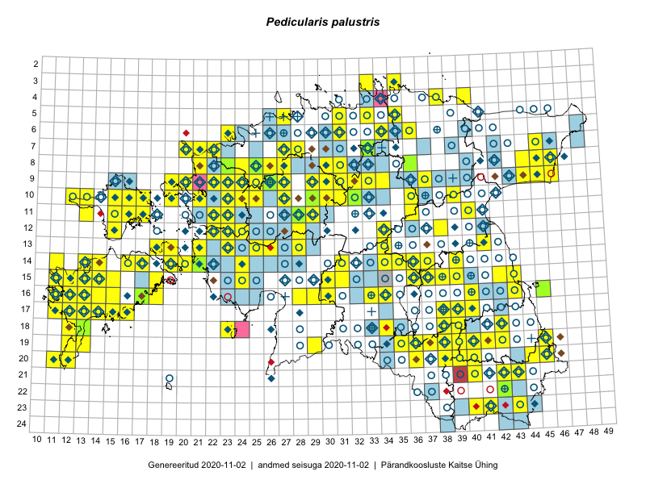

Pedicularis palustris — soo-kuuskjalg
Orobanchaceae :: Pedicularis palustris L. (855); Pedicularis palustris subsp. palustris L. (17); Pedicularis palustris subsp. opsiantha (Ekman) Almq. (11)

Kaart põhineb 1822 kirjel:
vaatlusi 676
herbaareksemplare 207
PKÜ kirjeid1 52
ELFi kirjeid2 887
Taime kaasaegsed ja ajaloolised leiukohad asuvad 393 ruudus.
Tingmärgid ja leidudega ruutude arvud periooditi uues (u) ja 2005 andmestikus (v)
| █ | vahemik | u3 | v4 |
|---|---|---|---|
| █ | 2006–2020 | 271 | – |
| ◆/◇ | 1971–2005 | 161 | 182 |
| ○ | 1921–1970 | 233 | 124 |
| + | kuni 1920 | 22 | 0 |
| × | hävinud | – | 0 |
| ? | kaheldav | – | 0 |
| Ruut | Leidja(d) | Leiuaeg | Kirje |
|---|---|---|---|
| 16-14 | Mari Reitalu, Sirje Azarov | 2020-09-03 | ruut/ala: Pedicularis palustris L. |
| 18-12 | Mari Reitalu, Sirje Azarov | 2020-08-23 | ruut/ala: Pedicularis palustris L. |
| 14-16 | Mari Reitalu, Sirje Azarov | 2020-08-19–2020-08-20 | ruut/ala: Pedicularis palustris L. |
| 22-37 | Eerik Leibak | 2020-08-18 | ELF: 890 |
| 19-36 | Nele Ingerpuu | 2020-08-13 | ELF: 24893 |
| 23-43 | Jaanus Paal, Taimi Paal | 2020-08-12 | ELF: 12331 |
| 23-43 | Jaanus Paal, Taimi Paal | 2020-08-12 | ELF: 342 |
| 13-18 | Mari Reitalu, Sirje Azarov | 2020-08-11–2020-08-12 | ruut/ala: Pedicularis palustris L. |
| 14-20 | Mari Reitalu, Sirje Azarov | 2020-08-11 | ruut/ala: Pedicularis palustris L. |
| 16-17 | Mari Reitalu, Sirje Azarov | 2020-08-08–2020-08-29 | ruut/ala: Pedicularis palustris L. |
| 15-43 | Peedu Saar | 2020-08-08 | ruut/ala: Pedicularis palustris L. |
| 15-15 | Mari Reitalu, Sirje Azarov | 2020-08-07 | ruut/ala: Pedicularis palustris L. |
| 23-42;23-43 | Toomas Kukk | 2020-08-06 | ELF: 336 |
| 23-42 | Toomas Kukk | 2020-08-06 | ELF: 335 |
| 07-33 | Ulvi Selgis | 2020-07-25 | punkt: Pedicularis palustris L. |
| 08-25 | Ott Luuk | 2020-07-23 | TAA0154047: Pedicularis palustris subsp. opsiantha (Ekman) Almq. |
| 14-14 | Mari Reitalu, Sirje Azarov, Aira Alasi | 2020-07-23 | ruut/ala: Pedicularis palustris L. |
| 08-25 | Ott Luuk | 2020-07-22–2020-07-23 | ruut/ala: Pedicularis palustris L. |
| 18-42 | Meeli Mesipuu | 2020-07-22 | ruut/ala: Pedicularis palustris L. |
| 09-26 | Ott Luuk | 2020-07-21 | TAA0154048: Pedicularis palustris subsp. opsiantha (Ekman) Almq. |
| 15-14 | Mari Reitalu, Sirje Azarov | 2020-07-21 | ruut/ala: Pedicularis palustris L. |
| 06-31 | Eerik Leibak | 2020-07-19 | ELF: 311 |
| 06-31 | Eerik Leibak | 2020-07-19 | ELF: 314 |
| 06-31 | Eerik Leibak | 2020-07-19 | ELF: 313 |
| 08-26 | Eerik Leibak | 2020-07-15 | ELF: 3512 |
| 08-26 | Eerik Leibak | 2020-07-15 | ELF: 2751 |
| 08-26 | Eerik Leibak | 2020-07-15 | ELF: 32 |
| 07-31 | Eerik Leibak | 2020-07-14 | ELF: 308 |
| 19-39 | Jaanus Paal, Taimi Paal | 2020-07-08 | ELF: 555 |
| 19-39 | Jaanus Paal, Taimi Paal | 2020-07-08 | ELF: 24863 |
| 20-45 | Toomas Kukk, Eerik Leibak | 2020-07-07 | ruut/ala: Pedicularis palustris L. |
| 20-45 | Toomas Kukk | 2020-07-07 | ELF: 24857 |
| 16-15 | Mari Reitalu, Sirje Azarov, Anne Teigamägi | 2020-07-07 | ruut/ala: Pedicularis palustris L. |
| 15-15 | Mari Reitalu, Sirje Azarov | 2020-07-07 | ruut/ala: Pedicularis palustris L. |
| 20-36 | Ulvi Selgis, Angelika Portsmuth | 2020-07-05 | punkt: Pedicularis palustris L. |
| 19-38 | Mari Reitalu, Sirje Azarov, Riine Latserus | 2020-07-05 | ruut/ala: Pedicularis palustris L. |
| 19-37 | Mari Reitalu, Sirje Azarov, Riine Latserus | 2020-07-04 | ruut/ala: Pedicularis palustris L. |
| 19-39 | Jaanus Paal, Taimi Paal | 2020-07-04 | ELF: 24862 |
| 17-15 | Mari Reitalu, Sirje Azarov | 2020-07-02 | ruut/ala: Pedicularis palustris L. |
| 09-26;09-27 | Eerik Leibak | 2020-07-02 | ELF: 9913 |
| 10-24 | Margus Ellermaa | 2020-06-17 | punkt: Pedicularis palustris L. |
| 10-27 | Thea Kull | 2020-06-16 | punkt: Pedicularis palustris L. |
| 05-27 | Ranno Puumets | 2020-06-10 | ruut/ala: Pedicularis palustris L. |
| 10-23 | Tõnu Ploompuu | 2019-10-01 | ELF: 213 |
| 10-23 | Tõnu Ploompuu | 2019-10-01 | ELF: 7781 |
| 11-24 | Tõnu Ploompuu | 2019-10-01 | ELF: 24799 |
| 09-44 | Ott Luuk | 2019-09-28 | ruut/ala: Pedicularis palustris L. |
| 09-44 | Ott Luuk | 2019-09-28 | ELF: 20592 |
| 09-44 | Ott Luuk | 2019-09-28 | ELF: 24774 |
| 16-13;16-14 | Mari Reitalu, Sirje Azarov | 2019-09-26 | ELF: 80 |
| 10-21 | Ott Luuk | 2019-09-19 | ruut/ala: Pedicularis palustris L. |
| 10-23 | Tõnu Ploompuu | 2019-09-07 | ELF: 199 |
| 08-24 | Peedu Saar, Ott Luuk | 2019-09-05 | ruut/ala: Pedicularis palustris L. |
| 08-25 | Ott Luuk, Peedu Saar | 2019-09-05 | ruut/ala: Pedicularis palustris L. |
| 08-22 | Peedu Saar | 2019-09-04 | ELF: 2892 |
| 08-21 | Peedu Saar | 2019-09-04 | ELF: 21019 |
| 09-22 | Ott Luuk | 2019-09-04 | ELF: 324 |
| 09-22 | Ott Luuk | 2019-09-04 | ELF: 3020 |
| 09-22 | Ott Luuk | 2019-09-04 | ELF: 24833 |
| 15-14 | Mari Reitalu, Sirje Azarov, Anne Teigamägi | 2019-09-04 | ruut/ala: Pedicularis palustris L. |
| 14-14;15-14 | Mari Reitalu, Sirje Azarov, Anne Teigamägi | 2019-09-04 | ELF: 24786 |
| 09-22 | Ott Luuk | 2019-09-03–2019-09-04 | ruut/ala: Pedicularis palustris L. |
| 08-21 | Peedu Saar | 2019-09-03 | ruut/ala: Pedicularis palustris L. |
| 08-21 | Peedu Saar | 2019-09-03 | ELF: 288 |
| 08-21;08-22 | Peedu Saar | 2019-09-03 | ELF: 2813 |
| 08-21 | Peedu Saar | 2019-09-03 | ELF: 24804 |
| 08-21;08-22 | Peedu Saar | 2019-09-03 | ELF: 24808 |
| 09-22 | Ott Luuk | 2019-09-03 | ELF: 2330 |
| 09-22 | Ott Luuk | 2019-09-03 | ELF: 21063 |
| 09-22 | Ott Luuk | 2019-09-03 | ELF: 24829 |
| 09-22 | Ott Luuk | 2019-09-03 | ELF: 24832 |
| 08-27 | Eerik Leibak | 2019-09-02 | ELF: 261 |
| 08-27 | Eerik Leibak | 2019-09-02 | ELF: 24763 |
| 15-13 | Sirje Azarov, Mari Reitalu | 2019-08-31 | ELF: 9 |
| 15-13 | Mari Reitalu, Sirje Azarov | 2019-08-31 | ruut/ala: Pedicularis palustris L. |
| 08-30;09-30 | Toivo Sepp, Ott Luuk | 2019-08-30 | ELF: 934 |
| 08-30 | Ott Luuk, Toivo Sepp | 2019-08-30 | ruut/ala: Pedicularis palustris L. |
| 16-30 | Peedu Saar, Martin Tikk, Toomas Kukk | 2019-08-28 | ruut/ala: Pedicularis palustris L. |
| 14-31 | Ott Luuk, Eerik Leibak | 2019-08-28 | ruut/ala: Pedicularis palustris L. |
| 14-31 | Ott Luuk, Eerik Leibak | 2019-08-28 | ELF: 24752 |
| 17-13 | Sirje Azarov, Mari Reitalu | 2019-08-25 | ELF: 24 |
| 16-12 | Sirje Azarov, Mari Reitalu | 2019-08-25 | ELF: 57 |
| 08-23 | Peedu Saar, Ott Luuk, Sten Mander, Kersti Tambets, Kristine Fenske | 2019-08-22 | ruut/ala: Pedicularis palustris L. |
| 08-23 | Ott Luuk | 2019-08-22 | TAA0152523: Pedicularis palustris subsp. opsiantha (Ekman) Almq. |
| 08-23 | Ott Luuk | 2019-08-22 | TAA0152524: Pedicularis palustris subsp. opsiantha (Ekman) Almq. |
| 08-23 | Ott Luuk | 2019-08-22 | TAA0152525: Pedicularis palustris subsp. opsiantha (Ekman) Almq. |
| 17-13 | Mari Reitalu, Sirje Azarov | 2019-08-19 | punkt: Pedicularis palustris L. |
| 17-13 | Mari Reitalu, Sirje Azarov | 2019-08-19 | ELF: 23 |
| 17-13 | Mari Reitalu, Sirje Azarov | 2019-08-19 | ELF: 5310 |
| 13-25 | Thea Kull | 2019-08-18 | ruut/ala: Pedicularis palustris L. |
| 13-25 | Thea Kull | 2019-08-18 | ruut/ala: Pedicularis palustris L. |
| 13-25 | Thea Kull | 2019-08-18 | ELF: 9920 |
| 13-25 | Thea Kull | 2019-08-18 | ELF: 21736 |
| 13-26 | Thea Kull | 2019-08-16 | ruut/ala: Pedicularis palustris L. |
| 12-26;13-26 | Thea Kull | 2019-08-16 | ELF: 20728 |
| 09-22 | Peedu Saar | 2019-08-16 | ruut/ala: Pedicularis palustris L. |
| 09-22 | Peedu Saar | 2019-08-16 | ELF: 2188 |
| 09-22 | Peedu Saar | 2019-08-16 | ELF: 2344 |
| 09-22 | Peedu Saar | 2019-08-16 | ELF: 24823 |
| 09-22 | Peedu Saar | 2019-08-16 | ELF: 24824 |
| 09-22 | Peedu Saar | 2019-08-16 | ELF: 24825 |
| 10-21 | Tõnu Ploompuu | 2019-08-15 | ELF: 222 |
| 07-21;08-21 | Peedu Saar | 2019-08-15 | ELF: 5886 |
| 07-21 | Peedu Saar | 2019-08-15 | ELF: 5888 |
| 16-13 | Mari Reitalu, Sirje Azarov | 2019-08-15 | ruut/ala: Pedicularis palustris L. |
| 16-13 | Mari Reitalu, Sirje Azarov | 2019-08-15 | ELF: 13 |
| 16-13 | Mari Reitalu, Sirje Azarov | 2019-08-15 | ELF: 14 |
| 16-13 | Mari Reitalu, Sirje Azarov | 2019-08-15 | ELF: 24783 |
| 16-12 | Sirje Azarov, Mari Reitalu | 2019-08-09 | ELF: 53 |
| 16-12 | Mari Reitalu, Sirje Azarov | 2019-08-09 | ELF: 50 |
| 16-12 | Mari Reitalu, Sirje Azarov | 2019-08-09 | ELF: 51 |
| 16-12 | Mari Reitalu, Sirje Azarov | 2019-08-09 | ELF: 52 |
| 07-33 | Ott Luuk, Jaak-Albert Metsoja | 2019-08-08 | ruut/ala: Pedicularis palustris L. |
| 07-33 | Ott Luuk, Jaak-Albert Metsoja | 2019-08-08 | TAA0152526: Pedicularis palustris subsp. opsiantha (Ekman) Almq. |
| 04-38 | Ott Luuk, Jaak-Albert Metsoja | 2019-08-06 | ruut/ala: Pedicularis palustris L. |
| 16-12 | Mari Reitalu, Sirje Azarov | 2019-08-06 | ELF: 60 |
| 12-24 | Tõnu Ploompuu, Arvo Talalaev | 2019-08-05 | ELF: 216 |
| 12-24 | Tõnu Ploompuu, Arvo Talalaev | 2019-08-05 | ELF: 24793 |
| 16-12 | Sirje Azarov, Mari Reitalu | 2019-08-05 | ELF: 56 |
| 08-36 | Ott Luuk, Jaak-Albert Metsoja | 2019-08-05 | ruut/ala: Pedicularis palustris L. |
| 08-36 | Ott Luuk, Jaak-Albert Metsoja | 2019-08-05 | TAA0152527: Pedicularis palustris subsp. opsiantha (Ekman) Almq. |
| 17-15 | Sirje Azarov | 2019-08-04 | ELF: 94 |
| 10-24 | Tõnu Ploompuu | 2019-08-03 | ELF: 7763 |
| 17-14 | Sirje Azarov | 2019-08-03 | ELF: 87 |
| 12-29 | Toivo Sepp | 2019-08-01 | ELF: 24743 |
| 10-32 | Ott Luuk | 2019-07-31 | ruut/ala: Pedicularis palustris L. |
| 10-32 | Ott Luuk | 2019-07-31 | TAA0152528: Pedicularis palustris L. |
| 12-29 | Toivo Sepp | 2019-07-30 | ELF: 1400 |
| 08-22 | Peedu Saar | 2019-07-27 | ELF: 2632 |
| 18-39 | Thea Kull | 2019-07-25 | ruut/ala: Pedicularis palustris L. |
| 07-21 | Peedu Saar | 2019-07-25 | ruut/ala: Pedicularis palustris L. |
| 07-21 | Peedu Saar | 2019-07-25 | ELF: 3262 |
| 07-21 | Peedu Saar | 2019-07-25 | ELF: 5890 |
| 07-21 | Peedu Saar | 2019-07-25 | ELF: 5893 |
| 17-39 | Thea Kull | 2019-07-23 | ruut/ala: Pedicularis palustris L. |
| 11-29 | Ott Luuk, Toivo Sepp | 2019-07-23 | ELF: 1124 |
| 11-22 | Tõnu Ploompuu, Eliko Kõiv | 2019-07-21 | ELF: 232 |
| 11-22 | Tõnu Ploompuu, Eliko Kõiv | 2019-07-21 | ELF: 238 |
| 10-24 | Tõnu Ploompuu, Eliko Kõiv | 2019-07-20 | ELF: 7787 |
| 10-24;11-24 | Tõnu Ploompuu, Eliko Kõiv | 2019-07-20 | ELF: 7789 |
| 10-24 | Tõnu Ploompuu, Eliko Kõiv | 2019-07-20 | ELF: 7801 |
| 10-24;11-24 | Tõnu Ploompuu, Eliko Kõiv | 2019-07-20 | ELF: 24787 |
| 10-24 | Tõnu Ploompuu, Eliko Kõiv | 2019-07-20 | ELF: 24789 |
| 15-32 | Eerik Leibak | 2019-07-20 | ELF: 1252 |
| 07-33 | Urmas Ojango | 2019-07-18 | punkt: Pedicularis palustris L. |
| 19-36 | Ott Luuk, Peedu Saar | 2019-07-16 | ruut/ala: Pedicularis palustris L. |
| 19-35 | Ott Luuk, Peedu Saar | 2019-07-16 | ruut/ala: Pedicularis palustris L. |
| 17-38 | Ott Luuk, Peedu Saar | 2019-07-15 | punkt: Pedicularis palustris L. |
| 08-27 | Eerik Leibak | 2019-07-15 | ELF: 882 |
| 08-27 | Eerik Leibak | 2019-07-14 | ELF: 865 |
| 19-42 | Meeli Mesipuu | 2019-07-12 | ruut/ala: Pedicularis palustris L. |
| 08-27 | Eerik Leibak | 2019-07-12 | ELF: 863 |
| 08-27 | Eerik Leibak | 2019-07-12 | ELF: 866 |
| 19-38 | Thea Kull | 2019-07-11 | ruut/ala: Pedicularis palustris L. |
| 19-41 | Meeli Mesipuu | 2019-07-11 | ruut/ala: Pedicularis palustris L. |
| 19-39 | Thea Kull | 2019-07-10 | ruut/ala: Pedicularis palustris L. |
| 16-11 | Sirje Azarov, Mari Reitalu | 2019-07-10 | ELF: 24779 |
| 20-45 | Ott Luuk, Tiit Hallikma | 2019-07-10 | punkt: Pedicularis palustris L. |
| 20-45 | Ott Luuk, Tiit Hallikma | 2019-07-10 | ruut/ala: Pedicularis palustris L. |
| 20-40 | Toomas Kukk, Indrek Tammekänd | 2019-07-09 | ruut/ala: Pedicularis palustris L. |
| 18-42 | Thea Kull, Meeli Mesipuu | 2019-07-09 | ruut/ala: Pedicularis palustris L. |
| 20-38 | Peedu Saar, Timo Luhamäe | 2019-07-09 | ruut/ala: Pedicularis palustris L. |
| 20-44 | Ott Luuk, Tiit Hallikma | 2019-07-09 | ruut/ala: Pedicularis palustris L. |
| 18-42 | Meeli Mesipuu, Thea Kull | 2019-07-09 | punkt: Pedicularis palustris L. |
| 11-36 | Jaanus Paal | 2019-07-09 | ELF: 12126 |
| 11-36 | Jaanus Paal, Elo Raspel | 2019-07-05 | ELF: 24707 |
| 12-15 | Toomas Kukk, Eerik Leibak | 2019-07-04 | ELF: 608 |
| 10-13 | Toomas Kukk | 2019-07-04 | ruut/ala: Pedicularis palustris L. |
| 10-13 | Toomas Kukk | 2019-07-04 | ELF: 24698 |
| 08-40;09-40 | Jaanus Paal | 2019-07-04 | ELF: 796 |
| 16-11 | Helle Mäemets | 2019-07-04 | punkt: Pedicularis palustris L. |
| 16-12 | Helle Mäemets | 2019-07-04 | punkt: Pedicularis palustris L. |
| 17-11 | Helle Mäemets | 2019-07-04 | punkt: Pedicularis palustris L. |
| 12-15 | Eerik Leibak, Toomas Kukk | 2019-07-04 | ruut/ala: Pedicularis palustris L. |
| 10-15 | Toomas Kukk | 2019-07-03 | ruut/ala: Pedicularis palustris L. |
| 10-15 | Toomas Kukk | 2019-07-03 | ELF: 12008 |
| 10-15;10-16 | Toomas Kukk | 2019-07-03 | ELF: 24692 |
| 11-16 | Eerik Leibak | 2019-07-03 | ruut/ala: Pedicularis palustris L. |
| 11-16 | Eerik Leibak | 2019-07-03 | ELF: 24695 |
| 11-15 | Toomas Kukk | 2019-07-02 | punkt: Pedicularis palustris L. |
| 11-15 | Toomas Kukk | 2019-07-02 | ELF: 612 |
| 09-36 | Jaanus Paal | 2019-07-02 | ELF: 807 |
| 11-15 | Eerik Leibak | 2019-07-02 | ELF: 24689 |
| 14-11 | Mari Reitalu | 2019-06-20 | ruut/ala: Pedicularis palustris L. |
| 14-11 | Mari Reitalu | 2019-06-20 | ELF: 2894 |
| 17-40 | Meeli Mesipuu | 2019-06-19 | ruut/ala: Pedicularis palustris L. |
| 14-21 | Peedu Saar, Ott Luuk, Toomas Kukk, Tiit Hallikma | 2019-06-18 | punkt: Pedicularis palustris L. |
| 16-30 | Dagmar Hoder | 2019-06-14 | punkt: Pedicularis palustris L. |
| 05-33 | Peedu Saar, Ott Luuk | 2019-06-11 | punkt: Pedicularis palustris L. |
| 05-33 | Ott Luuk, Peedu Saar | 2019-06-11 | ruut/ala: Pedicularis palustris L. |
| 16-45 | Ott Luuk | 2019-06-07 | ruut/ala: Pedicularis palustris L. |
| 16-45 | Ott Luuk | 2019-06-07 | TAA0152522: Pedicularis palustris subsp. palustris L. |
| 15-18 | Meeli Mesipuu | 2019-06-03 | ruut/ala: Pedicularis palustris L. |
| 16-40 | Ott Luuk, Thea Kull, Meeli Mesipuu | 2019-05-30 | ruut/ala: Pedicularis palustris L. |
| 15-39 | Ott Luuk, Thea Kull, Meeli Mesipuu | 2019-05-30 | ruut/ala: Pedicularis palustris L. |
| 10-25 | Tõnu Ploompuu, Marko Vainu | 2018-09-07 | ELF: 2028 |
| 08-22;09-22;09-23 | Tõnu Ploompuu, Laura Paju, Helen Valts, Marko Vainu | 2018-09-06 | ELF: 325 |
| 09-22 | Tõnu Ploompuu, Laura Paju, Helen Valts, Marko Vainu | 2018-09-06 | ELF: 21060 |
| 09-25 | Ott Luuk, Thea Kull | 2018-09-06 | ruut/ala: Pedicularis palustris L. |
| 14-23 | Indrek Tammekänd | 2018-09-03 | ELF: 1405 |
| 14-23 | Indrek Tammekänd | 2018-09-03 | ELF: 1418 |
| 14-23 | Indrek Tammekänd | 2018-09-03 | ELF: 3100 |
| 13-25 | Indrek Tammekänd | 2018-09-02 | ELF: 21728 |
| 10-32 | Ott Luuk | 2018-08-29 | ruut/ala: Pedicularis palustris L. |
| 12-29 | Indrek Tammekänd | 2018-08-29 | ELF: 1260 |
| 11-36 | Ulvi Selgis, Kai Kimmel, Enn Selgis | 2018-08-25 | ruut/ala: Pedicularis palustris L. |
| 11-28 | Ott Luuk, Toivo Sepp | 2018-08-24–2018-08-30 | ruut/ala: Pedicularis palustris L. |
| 11-28 | Ott Luuk, Toivo Sepp | 2018-08-24 | TAA0145832: Pedicularis palustris subsp. opsiantha (Ekman) Almq. |
| 11-28 | Ott Luuk, Toivo Sepp | 2018-08-24 | ELF: 145 |
| 11-28 | Ott Luuk, Toivo Sepp | 2018-08-24 | ELF: 3028 |
| 18-12 | Mari Reitalu, Sirje Azarov | 2018-08-23 | ELF: 24037 |
| 16-17 | Mari Reitalu, Sirje Azarov | 2018-08-22 | ELF: 103 |
| 08-22 | Tõnu Ploompuu, Priit Kukk | 2018-08-21 | ELF: 322 |
| 08-22 | Tõnu Ploompuu, Priit Kukk | 2018-08-21 | ELF: 2610 |
| 10-27 | Ott Luuk, Toivo Sepp | 2018-08-21 | ELF: 24572 |
| 15-14 | Mari Reitalu, Sirje Azarov | 2018-08-18 | ruut/ala: Pedicularis palustris L. |
| 15-14 | Mari Reitalu, Sirje Azarov | 2018-08-18 | ELF: 1288 |
| 14-24 | Peedu Saar, Toomas Kukk, Ott Luuk, Kersti Tambets, Sten Mander | 2018-08-17 | ruut/ala: Pedicularis palustris L. |
| 13-23 | Peedu Saar, Toomas Kukk, Ott Luuk, Kersti Tambets, Sten Mander | 2018-08-17 | ruut/ala: Pedicularis palustris L. |
| 10-22 | Tõnu Ploompuu | 2018-08-16 | ELF: 24600 |
| 11-29 | Peedu Saar, Toomas Kukk, Ott Luuk, Kersti Tambets, Sten Mander | 2018-08-16 | ruut/ala: Pedicularis palustris L. |
| 11-29 | Ott Luuk, Toomas Kukk, Peedu Saar, Sten Mander, Kersti Tambets | 2018-08-16 | punkt: Pedicularis palustris L. |
| 11-29 | Ott Luuk, Toomas Kukk, Peedu Saar, Sten Mander, Kersti Tambets | 2018-08-16 | punkt: Pedicularis palustris L. |
| 11-21 | Tõnu Ploompuu, Priit Kukk | 2018-08-13 | ELF: 234 |
| 16-12 | Triin Reitalu, Mari Reitalu | 2018-08-09 | punkt: Pedicularis palustris L. |
| 13-19 | Mari Reitalu, Sirje Azarov | 2018-08-07 | ELF: 1421 |
| 07-27 | Eerik Leibak | 2018-08-07 | ELF: 15896 |
| 10-24 | Tõnu Ploompuu | 2018-08-06 | ELF: 24597 |
| 15-12 | Mari Reitalu, Sirje Azarov | 2018-08-06 | ELF: 1300 |
| 10-22 | Tõnu Ploompuu | 2018-08-05 | ELF: 24594 |
| 12-28 | Indrek Tammekänd | 2018-08-02 | ELF: 1219 |
| 12-28 | Indrek Tammekänd | 2018-08-02 | ELF: 24587 |
| 16-34 | Peedu Saar | 2018-08-01 | ruut/ala: Pedicularis palustris L. |
| 16-34 | Peedu Saar | 2018-08-01 | ELF: 22583 |
| 10-31 | Ott Luuk | 2018-08-01 | ruut/ala: Pedicularis palustris L. |
| 10-31 | Ott Luuk | 2018-08-01 | punkt: Pedicularis palustris L. |
| 14-25 | Indrek Tammekänd | 2018-07-30 | ELF: 20243 |
| 08-36 | Alar Soppe | 2018-07-27 | ELF: 19472 |
| 07-45 | Alar Soppe | 2018-07-25 | ELF: 24446 |
| 17-13 | Mari Reitalu, Sirje Azarov | 2018-07-23 | ELF: 1449 |
| 11-36 | Alar Soppe | 2018-07-23 | ELF: 12122 |
| 15-42 | Peedu Saar | 2018-07-20 | ruut/ala: Pedicularis palustris L. |
| 15-42 | Peedu Saar | 2018-07-20 | ruut/ala: Pedicularis palustris L. |
| 09-45 | Peedu Saar | 2018-07-19 | ruut/ala: Pedicularis palustris L. |
| 08-45;09-45 | Peedu Saar | 2018-07-18 | ELF: 20617 |
| 08-45 | Peedu Saar | 2018-07-17–2018-07-18 | ruut/ala: Pedicularis palustris L. |
| 09-45 | Toomas Kukk | 2018-07-17 | ruut/ala: Pedicularis palustris L. |
| 09-44 | Toomas Kukk | 2018-07-17 | ruut/ala: Pedicularis palustris L. |
| 09-44;09-45 | Toomas Kukk | 2018-07-17 | ELF: 933 |
| 09-44;09-45 | Toomas Kukk | 2018-07-17 | ELF: 24442 |
| 08-45 | Peedu Saar | 2018-07-17 | punkt: Pedicularis palustris L. |
| 08-45 | Peedu Saar | 2018-07-17 | ELF: 906 |
| 08-26;09-26 | Thea Kull | 2018-07-15 | ELF: 1096 |
| 15-12 | Triin Reitalu, Ansis Blaus | 2018-07-13 | punkt: Pedicularis palustris L. |
| 16-12 | Mari Reitalu, Sirje Azarov | 2018-07-12 | ELF: 1501 |
| 17-12;17-13 | Mari Reitalu, Sirje Azarov | 2018-07-12 | ELF: 2473 |
| 08-26 | Eerik Leibak | 2018-07-12 | ELF: 21196 |
| 06-31 | Eerik Leibak | 2018-07-11 | ELF: 315 |
| 08-26 | Thea Kull | 2018-07-10 | ELF: 2506 |
| 20-11 | Mari Reitalu, Sirje Azarov | 2018-07-10 | ELF: 1491 |
| 16-12;17-12 | Mari Reitalu, Sirje Azarov | 2018-07-10 | ELF: 1659 |
| 20-12 | Mari Reitalu, Sirje Azarov | 2018-07-10 | ELF: 13405 |
| 08-30 | Thea Kull | 2018-07-09 | ELF: 1058 |
| 11-40 | Ulvi Selgis, Eerika Purgel, Enn Selgis | 2018-07-08 | ruut/ala: Pedicularis palustris L. |
| 06-23 | Ott Luuk, Meeli Mesipuu | 2018-07-05 | punkt: Pedicularis palustris L. |
| 06-23 | Ott Luuk, Meeli Mesipuu, Jaak-Albert Metsoja, Mari Metsoja, Peedu Saar | 2018-07-04–2018-07-06 | ruut/ala: Pedicularis palustris L. |
| 06-23 | Peedu Saar | 2018-07-04 | ruut/ala: Pedicularis palustris L. |
| 06-23 | Peedu Saar | 2018-07-04 | punkt: Pedicularis palustris L. |
| 08-27 | Mari Reitalu, Sirje Azarov | 2018-07-01 | ruut/ala: Pedicularis palustris L. |
| 07-37 | Alar Soppe | 2018-06-26 | ELF: 750 |
| 07-33 | Alar Soppe | 2018-06-26 | ELF: 22209 |
| 13-18 | Mari Reitalu, Merit Otsus | 2018-06-16 | punkt: Pedicularis palustris L. |
| 11-15 | Liis Soonik | 2018-06-15 | punkt: Pedicularis palustris L. |
| 18-23 | Indrek Tammekänd | 2018-05-31–2018-06-02 | ruut/ala: Pedicularis palustris L. |
| 11-15 | Peedu Saar, Ott Luuk | 2017-09-13 | ruut/ala: Pedicularis palustris L. |
| 11-13 | Toomas Kukk, Indrek Tammekänd | 2017-09-12 | ruut/ala: Pedicularis palustris L. |
| 19-29 | Toomas Kukk, Ott Luuk, Kersti Tambets, Timo Luhamäe, Sten Mander | 2017-08-29 | ruut/ala: Pedicularis palustris L. |
| 19-29 | Ott Luuk | 2017-08-29 | punkt: Pedicularis palustris L. |
| 14-35 | Meeli Mesipuu, Ott Luuk, Helen Toom | 2017-08-28 | ruut/ala: Pedicularis palustris L. |
| 06-31 | Eerik Leibak | 2017-08-25 | ELF: 312 |
| 16-17 | Kristiina Mark | 2017-08-23 | TAA0145453: Pedicularis palustris L. |
| 15-37 | Peedu Saar, Susanna Vain | 2017-08-22 | ruut/ala: Pedicularis palustris L. |
| 15-37 | Meeli Mesipuu | 2017-08-22 | punkt: Pedicularis palustris L. |
| 15-37 | Meeli Mesipuu | 2017-08-22 | ruut/ala: Pedicularis palustris L. |
| 15-38 | Indrek Tammekänd | 2017-08-17 | ruut/ala: Pedicularis palustris L. |
| 14-35 | Ott Luuk | 2017-08-16 | ruut/ala: Pedicularis palustris L. |
| 14-35 | Peedu Saar | 2017-08-15–2017-09-16 | ruut/ala: Pedicularis palustris L. |
| 14-36 | Ott Luuk | 2017-08-15 | ruut/ala: Pedicularis palustris L. |
| 15-37 | Peedu Saar | 2017-08-14 | punkt: Pedicularis palustris L. |
| 14-37 | Peedu Saar | 2017-08-14 | ruut/ala: Pedicularis palustris L. |
| 09-24 | Mari Reitalu, Eerik Leibak | 2017-08-11 | ruut/ala: Pedicularis palustris L. |
| 09-29 | Toomas Kukk, Ilmar Uibopuu, Kadri Kuusksalu | 2017-08-09 | ruut/ala: Pedicularis palustris L. |
| 07-28 | Peedu Saar, Timo Luhamäe | 2017-08-08 | ruut/ala: Pedicularis palustris L. |
| 07-27 | Peedu Saar, Timo Luhamäe | 2017-08-08 | ruut/ala: Pedicularis palustris L. |
| 11-28 | Ott Luuk, Thea Kull | 2017-08-08 | ruut/ala: Pedicularis palustris L. |
| 15-37 | Thea Kull, Ott Luuk | 2017-08-04 | punkt: Pedicularis palustris L. |
| 15-37 | Peedu Saar | 2017-08-03–2017-08-04 | ruut/ala: Pedicularis palustris L. |
| 12-34 | Ott Luuk, Thea Kull | 2017-08-03 | ruut/ala: Pedicularis palustris L. |
| 20-39 | Ilmar Uibopuu | 2017-08-01 | ruut/ala: Pedicularis palustris L. |
| 10-39 | Ulvi Selgis | 2017-07-29 | ruut/ala: Pedicularis palustris L. |
| 07-21 | Toomas Kukk, Ilmar Uibopuu | 2017-07-28 | ruut/ala: Pedicularis palustris L. |
| 06-23 | Toomas Kukk | 2017-07-27 | ruut/ala: Pedicularis palustris L. |
| 06-23 | Toomas Kukk, Ilmar Uibopuu, Kadri Kuusksalu | 2017-07-26 | ruut/ala: Pedicularis palustris L. |
| 14-39 | Peedu Saar | 2017-07-26 | ruut/ala: Pedicularis palustris L. |
| 19-38 | Peedu Saar, Ott Luuk | 2017-07-25 | ruut/ala: Pedicularis palustris L. |
| 20-38 | Peedu Saar, Ott Luuk | 2017-07-25 | punkt: Pedicularis palustris L. |
| 20-38 | Ott Luuk, Peedu Saar | 2017-07-25 | ruut/ala: Pedicularis palustris L. |
| 06-31 | Peedu Saar, Ott Luuk | 2017-07-21 | ruut/ala: Pedicularis palustris L. |
| 06-31 | Ott Luuk, Peedu Saar | 2017-07-21 | punkt: Pedicularis palustris L. |
| 08-26 | Helle Mäemets, Kadi Palmik | 2017-07-16 | ruut/ala: Pedicularis palustris L. |
| 07-22 | Helle Mäemets, Kadi Palmik | 2017-07-15 | ruut/ala: Pedicularis palustris L. |
| 08-25 | Helle Mäemets, Kadi Palmik | 2017-07-14 | ruut/ala: Pedicularis palustris L. |
| 18-23 | Mari Reitalu, Sirje Azarov, Ester Valdvee, Triin Reitalu | 2017-07-11–2017-07-13 | ruut/ala: Pedicularis palustris L. |
| 16-12 | Triin Reitalu, Mari Reitalu | 2017-07-10 | punkt: Pedicularis palustris L. |
| 07-20 | Peedu Saar, Elle Roosaluste, Kaili Orav | 2017-05-29 | punkt: Pedicularis palustris L. |
| 17-13 | Ott Luuk, Peedu Saar | 2016-10-08 | ruut/ala: Pedicularis palustris L. |
| 14-13 | Toomas Kukk, Meeli Mesipuu, Mari Reitalu | 2016-10-06 | ruut/ala: Pedicularis palustris L. |
| 18-23 | Peedu Saar, Ott Luuk | 2016-09-21 | punkt: Pedicularis palustris L. |
| 18-23 | Ott Luuk, Peedu Saar | 2016-09-21 | ruut/ala: Pedicularis palustris L. |
| 09-19 | Meeli Mesipuu, Ott Luuk | 2016-09-16 | ruut/ala: Pedicularis palustris L. |
| 07-33 | Peedu Saar, Toomas Kukk | 2016-09-15 | punkt: Pedicularis palustris L. |
| 10-19 | Ott Luuk, Meeli Mesipuu | 2016-09-15 | ruut/ala: Pedicularis palustris L. |
| 07-33 | Peedu Saar, Toomas Kukk | 2016-09-13 | ruut/ala: Pedicularis palustris L. |
| 09-30 | Ott Luuk, Peedu Saar | 2016-09-06–2016-09-07 | ruut/ala: Pedicularis palustris L. |
| 14-16 | Peedu Saar, Ott Luuk | 2016-08-31 | punkt: Pedicularis palustris L. |
| 14-16 | Ott Luuk, Peedu Saar | 2016-08-31 | ruut/ala: Pedicularis palustris L. |
| 09-46 | Meeli Mesipuu, Karin Kikas | 2016-08-31 | ruut/ala: Pedicularis palustris L. |
| 18-38 | Mall Värva | 2016-08-31 | punkt: Pedicularis palustris L. |
| 14-17 | Ott Luuk, Peedu Saar | 2016-08-29 | ruut/ala: Pedicularis palustris L. |
| 15-18 | Mari Reitalu, Hannes Pehlak | 2016-08-26 | ruut/ala: Pedicularis palustris L. |
| 10-29 | Indrek Tammekänd, Janno Tammekänd, Üllar Tammekänd, Andreas Tammekänd, Tene Johanson | 2016-08-20–2016-08-21 | ruut/ala: Pedicularis palustris L. |
| 13-19 | Mari Reitalu, Sirje Azarov | 2016-08-16 | ruut/ala: Pedicularis palustris L. |
| 14-14 | Peedu Saar, Maret Gerz | 2016-08-12 | ruut/ala: Pedicularis palustris L. |
| 15-14 | Peedu Saar, Maret Gerz | 2016-08-12 | punkt: Pedicularis palustris L. |
| 15-14 | Maret Gerz, Peedu Saar | 2016-08-12 | ruut/ala: Pedicularis palustris L. |
| 17-14 | Toomas Kukk, Meeli Mesipuu, Johannes Kõdar | 2016-08-11 | ruut/ala: Pedicularis palustris L. |
| 17-15 | Meeli Mesipuu, Toomas Kukk, Johannes Kõdar | 2016-08-11 | ruut/ala: Pedicularis palustris L. |
| 11-15 | Thea Kull, Peedu Saar | 2016-08-09 | ruut/ala: Pedicularis palustris L. |
| 16-18 | Mari Reitalu, Sirje Azarov | 2016-08-08 | ruut/ala: Pedicularis palustris L. |
| 20-12 | Mari Reitalu, Sirje Azarov | 2016-08-08 | ruut/ala: Pedicularis palustris L. |
| 11-17 | Maret Gerz, Meeli Mesipuu | 2016-08-08 | ruut/ala: Pedicularis palustris L. |
| 21-43 | Thea Kull, Peedu Saar | 2016-08-05 | ruut/ala: Pedicularis palustris L. |
| 09-37 | Ulvi Selgis | 2016-07-31 | ruut/ala: Pedicularis palustris L. |
| 18-13 | Sirje Azarov, Mari Reitalu | 2016-07-31 | TAA0137762: Pedicularis palustris subsp. opsiantha (Ekman) Almq. |
| 18-13 | Mari Reitalu, Sirje Azarov | 2016-07-31 | ruut/ala: Pedicularis palustris L. |
| 15-36 | Karin Kaljund, Kaire Lanno | 2016-07-29 | ruut/ala: Pedicularis palustris L. |
| 05-35 | Peedu Saar, Liina Oja, Susanna Vain | 2016-07-27 | ruut/ala: Pedicularis palustris L. |
| 09-34 | Ott Luuk, Eerik Leibak | 2016-07-25 | ruut/ala: Pedicularis palustris L. |
| 09-33 | Ott Luuk, Eerik Leibak | 2016-07-25 | ruut/ala: Pedicularis palustris L. |
| 15-37 | Karin Kaljund, Kaire Lanno | 2016-07-25 | ruut/ala: Pedicularis palustris L. |
| 08-31 | Erkki Otsman, Sergei Smirnov | 2016-07-24 | ruut/ala: Pedicularis palustris L. |
| 08-31 | Erkki Otsman, Sergei Smirnov | 2016-07-24 | ruut/ala: Pedicularis palustris L. |
| 10-31 | Toivo Sepp, Peedu Saar | 2016-07-22 | ruut/ala: Pedicularis palustris L. |
| 14-34 | Thea Kull, Tiit Hallikma | 2016-07-22 | ruut/ala: Pedicularis palustris L. |
| 15-30 | Sirje Azarov, Meeli Mesipuu | 2016-07-21 | ruut/ala: Pedicularis palustris L. |
| 18-34 | Thea Kull, Indrek Tammekänd | 2016-07-19 | ruut/ala: Pedicularis palustris L. |
| 09-37 | Mari Reitalu, Triin Reitalu | 2016-07-11 | ruut/ala: Pedicularis palustris L. |
| 13-28 | Thea Kull, Tiit Hallikma | 2016-07-08 | ruut/ala: Pedicularis palustris L. |
| 08-24 | Jaak-Albert Metsoja, Mari Metsoja | 2016-07-08 | ruut/ala: Pedicularis palustris L. |
| 07-22 | Mari Reitalu, Eerik Leibak | 2016-07-07–2016-07-10 | ruut/ala: Pedicularis palustris L. |
| 08-21 | Tiit Hallikma, Tõnu Ploompuu | 2016-07-07 | ruut/ala: Pedicularis palustris L. |
| 11-22 | Sirje Azarov, Oliver Parrest | 2016-07-07 | ruut/ala: Pedicularis palustris L. |
| 09-20 | Peedu Saar, Timo Luhamäe | 2016-07-07 | ruut/ala: Pedicularis palustris L. |
| 07-21 | Meeli Mesipuu | 2016-07-07 | ruut/ala: Pedicularis palustris L. |
| 10-21 | Jaak-Albert Metsoja, Mari Metsoja | 2016-07-07 | ruut/ala: Pedicularis palustris L. |
| 09-29 | Toomas Kukk, Sander Laherand | 2016-07-06 | ruut/ala: Pedicularis palustris L. |
| 10-25 | Sirje Azarov, Meeli Mesipuu | 2016-07-06 | ruut/ala: Pedicularis palustris L. |
| 09-30 | Sander Laherand, Toomas Kukk | 2016-07-06 | ruut/ala: Pedicularis palustris L. |
| 09-27 | Rein Kalamees, Liina Oja | 2016-07-06 | ruut/ala: Pedicularis palustris L. |
| 11-23 | Aat Sarv, Maret Gerz | 2016-07-06 | ruut/ala: Pedicularis palustris L. |
| 13-23 | Thea Kull, Eerik Leibak | 2016-07-05 | ruut/ala: Pedicularis palustris L. |
| 13-25 | Peedu Saar, Timo Luhamäe, Johannes Kõdar | 2016-07-05 | ruut/ala: Pedicularis palustris L. |
| 13-21 | Aat Sarv, Maret Gerz | 2016-07-05 | ruut/ala: Pedicularis palustris L. |
| 08-26 | Jaak-Albert Metsoja, Mari Metsoja | 2016-07-04 | ruut/ala: Pedicularis palustris L. |
| 07-20 | Jaak-Albert Metsoja, Mari Metsoja | 2016-07-01 | ruut/ala: Pedicularis palustris L. |
| 14-19 | Meeli Mesipuu | 2016-06-29 | ruut/ala: Pedicularis palustris L. |
| 06-36 | Karin Kikas, Elle Rajandu | 2016-06-28 | ruut/ala: Pedicularis palustris L. |
| 13-25 | Thea Kull | 2016-06-22 | ruut/ala: Pedicularis palustris L. |
| 21-42 | Sander Laherand, Ott Luuk | 2016-06-16 | ruut/ala: Pedicularis palustris L. |
| 19-37 | Maret Gerz, Liina Oja | 2016-06-16 | ruut/ala: Pedicularis palustris L. |
| 23-41 | Sander Laherand, Ott Luuk, Susanna Vain | 2016-06-15 | ruut/ala: Pedicularis palustris L. |
| 23-41 | Ott Luuk, Sander Laherand, Susanna Vain | 2016-06-15 | punkt: Pedicularis palustris L. |
| 23-43 | Meeli Mesipuu, Timo Luhamäe | 2016-06-15 | ruut/ala: Pedicularis palustris L. |
| 23-40 | Sander Laherand, Ott Luuk, Susanna Vain | 2016-06-14 | ruut/ala: Pedicularis palustris L. |
| 19-36 | Peedu Saar, Tarmo Niitla | 2016-06-14 | ruut/ala: Pedicularis palustris L. |
| 19-40 | Toomas Kukk, Tiit Hallikma, Johannes Kõdar | 2016-06-13 | ruut/ala: Pedicularis palustris L. |
| 18-39 | Tarmo Niitla, Peedu Saar | 2016-06-13 | ruut/ala: Pedicularis palustris L. |
| 18-39 | Peedu Saar, Tarmo Niitla | 2016-06-13 | punkt: Pedicularis palustris L. |
| 19-39 | Peedu Saar, Tarmo Niitla | 2016-06-13 | ruut/ala: Pedicularis palustris L. |
| 19-41 | Ott Luuk, Sander Laherand, Susanna Vain | 2016-06-13 | ruut/ala: Pedicularis palustris L. |
| 19-38 | Meeli Mesipuu, Timo Luhamäe | 2016-06-13 | ruut/ala: Pedicularis palustris L. |
| 12-38 | Eeva-Maria Jeletsky, Tarmo Niitla | 2016-06-10 | ruut/ala: Pedicularis palustris L. |
| 07-27 | Thea Kull, Meeli Mesipuu | 2016-06-03 | ruut/ala: Pedicularis palustris L. |
| 08-46 | Indrek Tammekänd | 2016-05-28–2016-05-29 | ruut/ala: Pedicularis palustris L. |
| 10-19 | Toomas Kukk, Peedu Saar | 2016-05-12 | ruut/ala: Pedicularis palustris L. |
| 16-17 | Peedu Saar | 2015-09-07–2015-09-11 | ruut/ala: Pedicularis palustris L. |
| 12-23 | Thea Kull, Eerik Leibak | 2015-08-26 | ruut/ala: Pedicularis palustris L. |
| 03-35 | Rein Kalamees, Kersti Püssa | 2015-08-25 | ruut/ala: Pedicularis palustris L. |
| 12-24 | Tiit Hallikma, Toomas Kukk | 2015-08-24 | ruut/ala: Pedicularis palustris L. |
| 11-29 | Ott Luuk, Toivo Sepp | 2015-08-20 | ruut/ala: Pedicularis palustris L. |
| 13-23 | Kirsi Loide, Marje Loide | 2015-08-18–2015-08-20 | ruut/ala: Pedicularis palustris L. |
| 08-24 | Sirje Lagle, Tõnu Ploompuu | 2015-08-18 | ruut/ala: Pedicularis palustris L. |
| 09-32 | Ott Luuk, Toivo Sepp | 2015-08-18 | ruut/ala: Pedicularis palustris L. |
| 19-12 | Oliver Parrest | 2015-08-18 | ruut/ala: Pedicularis palustris L. |
| 08-25 | Meelis Muuga, Tõnu Ploompuu | 2015-08-17 | ruut/ala: Pedicularis palustris L. |
| 17-12 | Mari Reitalu | 2015-08-13 | ruut/ala: Pedicularis palustris L. |
| 10-17 | Toomas Kukk, Eerik Leibak | 2015-08-12 | ruut/ala: Pedicularis palustris L. |
| 16-43 | Thea Kull, Meeli Mesipuu | 2015-08-12 | ruut/ala: Pedicularis palustris L. |
| 17-13 | Mari Reitalu, Oliver Parrest | 2015-08-12 | ruut/ala: Pedicularis palustris L. |
| 19-37 | Eeva-Maria Jeletsky, Tarmo Niitla | 2015-08-10 | ruut/ala: Pedicularis palustris L. |
| 16-11 | Triin Reitalu, Mari Reitalu | 2015-08-09–2015-08-10 | ruut/ala: Pedicularis palustris L. |
| 16-11 | Mari Reitalu, Triin Reitalu | 2015-08-09–2015-08-10 | ruut/ala: Pedicularis palustris L. |
| 05-31 | Rein Kalamees, Kersti Püssa | 2015-08-09 | ruut/ala: Pedicularis palustris L. |
| 17-11 | Mari Reitalu, Triin Reitalu | 2015-08-05 | ruut/ala: Pedicularis palustris L. |
| 03-33 | Rein Kalamees, Kersti Püssa | 2015-08-04 | ruut/ala: Pedicularis palustris L. |
| 10-32 | Ott Luuk | 2015-08-03–2015-08-10 | ruut/ala: Pedicularis palustris L. |
| 13-34 | Katrit Karus, Tõnu Feldmann | 2015-08-03 | ruut/ala: Pedicularis palustris L. |
| 18-12 | Mari Reitalu, Sirje Azarov, Oliver Parrest | 2015-08-02 | ruut/ala: Pedicularis palustris L. |
| 09-31 | Ott Luuk, Toivo Sepp | 2015-07-29 | ruut/ala: Pedicularis palustris L. |
| 16-13 | Sirje Azarov, Aira Alasi | 2015-07-28 | ruut/ala: Pedicularis palustris L. |
| 19-45 | Tõnu Feldmann, Katrit Karus | 2015-07-27 | ruut/ala: Pedicularis palustris L. |
| 16-13 | Mari Reitalu, Oliver Parrest | 2015-07-27 | ruut/ala: Pedicularis palustris L. |
| 09-34 | Jana-Maria Habicht, Ester Valdvee, Kirke Pilvik | 2015-07-25–2015-07-26 | ruut/ala: Pedicularis palustris L. |
| 15-13 | Mari Reitalu, Oliver Parrest | 2015-07-24 | ruut/ala: Pedicularis palustris L. |
| 15-18 | Karin Kikas, Elle Rajandu | 2015-07-24 | ruut/ala: Pedicularis palustris L. |
| 17-12 | Mari Reitalu, Triin Reitalu | 2015-07-22–2015-07-31 | ruut/ala: Pedicularis palustris L. |
| 08-45 | Peedu Saar, Liina Oja | 2015-07-22 | ruut/ala: Pedicularis palustris L. |
| 07-45 | Ott Luuk, Hannes Pehlak | 2015-07-22 | ruut/ala: Pedicularis palustris L. |
| 04-40 | Kaili Orav, Silvia Pihu | 2015-07-21 | ruut/ala: Pedicularis palustris L. |
| 08-44 | Peedu Saar, Liina Oja | 2015-07-20 | ruut/ala: Pedicularis palustris L. |
| 16-12 | Mari Reitalu, Triin Reitalu | 2015-07-20 | ruut/ala: Pedicularis palustris L. |
| 10-24 | Hanna-Eliisa Luts, Tõnu Ploompuu, Anna-Grete Rebane | 2015-07-19 | ruut/ala: Pedicularis palustris L. |
| 14-11 | Mari Reitalu, Oliver Parrest | 2015-07-14 | ruut/ala: Pedicularis palustris L. |
| 16-12 | Mari Reitalu | 2015-07-08 | ruut/ala: Pedicularis palustris L. |
| 16-17 | Meeli Mesipuu, Kadri Tali | 2015-07-06 | ruut/ala: Pedicularis palustris L. |
| 19-13 | Oliver Parrest | 2015-07-01 | ruut/ala: Pedicularis palustris L. |
| 16-33 | Maria Abakumova | 2015-06-30 | ruut/ala: Pedicularis palustris L. |
| 11-15 | Eeva-Maria Jeletsky, Tarmo Niitla | 2015-06-27 | ruut/ala: Pedicularis palustris L. |
| 10-12 | Eeva-Maria Jeletsky, Tarmo Niitla | 2015-06-26 | ruut/ala: Pedicularis palustris L. |
| 12-15 | Eeva-Maria Jeletsky, Tarmo Niitla | 2015-06-26 | ruut/ala: Pedicularis palustris L. |
| 09-20 | Kadi-Liis Kesler | 2015-06-25–2015-10-11 | ruut/ala: Pedicularis palustris L. |
| 14-19 | Meeli Mesipuu | 2015-06-20 | ruut/ala: Pedicularis palustris L. |
| 17-40 | Thea Kull, Peedu Saar | 2015-06-19 | ruut/ala: Pedicularis palustris L. |
| 13-25 | Indrek Tammekänd, Katrin Aavik | 2015-06-15 | ruut/ala: Pedicularis palustris L. |
| 11-29 | Toomas Kukk, Tiit Hallikma | 2015-06-11 | ruut/ala: Pedicularis palustris L. |
| 15-31 | Toomas Kukk, Tiit Hallikma | 2015-06-10 | ruut/ala: Pedicularis palustris L. |
| 15-30 | Tiit Hallikma, Toomas Kukk | 2015-06-10 | ruut/ala: Pedicularis palustris L. |
| 06-23 | Mari Metsoja, Jaak-Albert Metsoja, Ott Luuk | 2015-06-04 | ruut/ala: Pedicularis palustris L. |
| 07-45 | Toomas Kukk, Tiit Hallikma | 2015-06-01 | ruut/ala: Pedicularis palustris L. |
| 18-23 | Ott Luuk, Elle Roosaluste | 2015-05-29 | ruut/ala: Pedicularis palustris L. |
| 10-17 | Peedu Saar, Toomas Kukk | 2015-05-26 | ruut/ala: Pedicularis palustris L. |
| 15-24 | Indrek Tammekänd, Liisa Rennel, Agu Leivits, Hannes Pehlak, Irja Tammekänd | 2015-04-27–2015-08-02 | ruut/ala: Pedicularis palustris L. |
| 14-31 | Indrek Tammekänd | 2015-04-19 | ruut/ala: Pedicularis palustris L. |
| 12-28 | Indrek Tammekänd | 2014-09-17 | ruut/ala: Pedicularis palustris L. |
| 12-28 | Indrek Tammekänd | 2014-09-17 | ruut/ala: Pedicularis palustris L. |
| 16-28 | Indrek Tammekänd | 2014-09-04 | ruut/ala: Pedicularis palustris L. |
| 16-29 | Indrek Tammekänd | 2014-09-04 | ruut/ala: Pedicularis palustris L. |
| 06-34 | Ott Luuk, Peedu Saar | 2014-09-02 | punkt: Pedicularis palustris L. |
| 17-12 | Mari Reitalu | 2014-08-31 | ruut/ala: Pedicularis palustris L. |
| 13-23 | Ott Luuk, Peedu Saar | 2014-08-29 | ruut/ala: Pedicularis palustris L. |
| 11-15 | Peedu Saar | 2014-08-28 | ruut/ala: Pedicularis palustris L. |
| 10-16 | Ott Luuk | 2014-08-28 | ruut/ala: Pedicularis palustris L. |
| 10-15 | Ott Luuk | 2014-08-28 | ruut/ala: Pedicularis palustris L. |
| 08-27 | Ott Luuk | 2014-08-27 | ruut/ala: Pedicularis palustris L. |
| 14-11 | Meeli Mesipuu | 2014-08-24 | punkt: Pedicularis palustris L. |
| 10-23 | Toomas Kukk, Thea Kull | 2014-08-22 | punkt: Pedicularis palustris L. |
| 10-23 | Toomas Kukk, Thea Kull | 2014-08-22 | ruut/ala: Pedicularis palustris L. |
| 09-22 | Ott Luuk, Peedu Saar, Maret Gerz | 2014-08-21–2014-08-22 | ruut/ala: Pedicularis palustris L. |
| 11-22 | Toomas Kukk, Thea Kull | 2014-08-21 | ruut/ala: Pedicularis palustris L. |
| 20-11 | Mari Reitalu, Triin Reitalu | 2014-08-15–2014-08-17 | ruut/ala: Pedicularis palustris L. |
| 10-30 | Ott Luuk, Peedu Saar | 2014-08-14 | ruut/ala: Pedicularis palustris L. |
| 09-33 | Peedu Saar, Ott Luuk | 2014-08-05 | ruut/ala: Pedicularis palustris L. |
| 10-32 | Thea Kull | 2014-08-02 | ruut/ala: Pedicularis palustris L. |
| 09-33 | Thea Kull | 2014-07-14 | ruut/ala: Pedicularis palustris L. |
| 09-23 | Mari Reitalu | 2014-07-10 | ruut/ala: Pedicularis palustris L. |
| 16-40 | Maret Gerz, Ott Luuk | 2014-06-25 | ruut/ala: Pedicularis palustris L. |
| 15-11 | Mari Reitalu | 2014-05-18 | ruut/ala: Pedicularis palustris L. |
| 16-13 | Mari Reitalu, Triin Reitalu | 2013-09-04 | punkt: Pedicularis palustris L. |
| 08-26 | Kaupo Kohv, Priit Voolaid | 2013-08-07 | ELF: 15898 |
| 14-21 | Toomas Kukk | 2013-06-29 | ruut/ala: Pedicularis palustris L. |
| 07-39 | Alar Soppe | 2012-09-11 | ELF: 22983 |
| 15-37 | Peedu Saar | 2012-09-09 | ELF: 23537 |
| 15-37 | Peedu Saar | 2012-09-09 | ELF: 23540 |
| 15-37 | Peedu Saar | 2012-09-09 | ELF: 23538 |
| 09-22 | Tõnu Ploompuu | 2012-09-06 | ELF: 23877 |
| 09-45 | Alar Soppe | 2012-09-06 | ELF: 23543 |
| 09-46 | Alar Soppe | 2012-09-06 | ELF: 23862 |
| 15-43 | Ott Luuk | 2012-09-05 | ELF: 23914 |
| 15-12 | Mari Reitalu | 2012-09-04 | ELF: 24000 |
| 15-11;16-11 | Mari Reitalu | 2012-09-04 | ELF: 1310 |
| 09-22 | Tõnu Ploompuu, Annely Pruel, Mart Tartlan | 2012-09-02 | ELF: 23871 |
| 09-22 | Tõnu Ploompuu, Annely Pruel, Mart Tartlan | 2012-09-02 | ELF: 23527 |
| 12-26 | Eerik Leibak | 2012-08-31 | ELF: 23526 |
| 12-27 | Eerik Leibak | 2012-08-31 | ELF: 23523 |
| 08-45 | Alar Soppe | 2012-08-29 | ELF: 23433 |
| 08-45;09-45 | Alar Soppe | 2012-08-29 | ELF: 23434 |
| 08-45;09-45 | Alar Soppe | 2012-08-29 | ELF: 20617 |
| 08-45 | Alar Soppe | 2012-08-29 | ELF: 23001 |
| 16-12 | Mari Reitalu | 2012-08-28 | ELF: 24001 |
| 16-12 | Mari Reitalu | 2012-08-28 | ELF: 24002 |
| 15-14 | Mari Reitalu | 2012-08-25 | ELF: 23993 |
| 15-14 | Mari Reitalu | 2012-08-25 | ELF: 2190 |
| 15-13 | Mari Reitalu | 2012-08-24 | ELF: 1295 |
| 15-13 | Mari Reitalu | 2012-08-24 | ELF: 23986 |
| 14-13 | Mari Reitalu | 2012-08-22 | ELF: 1299 |
| 14-13 | Mari Reitalu | 2012-08-22 | ELF: 23982 |
| 13-23 | Eerik Leibak | 2012-08-22 | ELF: 23503 |
| 13-23 | Eerik Leibak | 2012-08-22 | ELF: 23829 |
| 13-23 | Eerik Leibak | 2012-08-22 | ELF: 23502 |
| 14-13 | Mari Reitalu | 2012-08-21 | ELF: 1307 |
| 13-23 | Eerik Leibak | 2012-08-21 | ELF: 23507 |
| 13-23 | Eerik Leibak | 2012-08-21 | ELF: 23508 |
| 08-21;08-22 | Eerik Leibak | 2012-08-20 | ELF: 23529 |
| 08-22 | Eerik Leibak | 2012-08-20 | ELF: 23531 |
| 08-22 | Eerik Leibak | 2012-08-20 | ELF: 23532 |
| 17-13 | Sirje Azarov | 2012-08-19 | ELF: 23025 |
| 17-13 | Sirje Azarov | 2012-08-19 | ELF: 23024 |
| 09-30;09-31 | Toivo Sepp | 2012-08-18 | ELF: 23458 |
| 09-30;09-31 | Toivo Sepp | 2012-08-18 | ELF: 23459 |
| 14-11 | Mari Reitalu | 2012-08-18 | ELF: 23977 |
| 09-31 | Toivo Sepp | 2012-08-17 | ELF: 23855 |
| 09-31 | Toivo Sepp | 2012-08-17 | ELF: 23452 |
| 09-30;09-31 | Toivo Sepp | 2012-08-17 | ELF: 23453 |
| 09-30 | Toivo Sepp | 2012-08-17 | ELF: 23854 |
| 08-25 | Eerik Leibak | 2012-08-16 | ELF: 23451 |
| 08-25 | Eerik Leibak | 2012-08-16 | ELF: 23450 |
| 17-13 | Mari Reitalu | 2012-08-15 | ELF: 23520 |
| 08-30 | Toivo Sepp | 2012-08-14 | ELF: 1058 |
| 11-29 | Toivo Sepp, Monika Suškevics | 2012-08-12 | ELF: 23842 |
| 10-32 | Toivo Sepp | 2012-08-10 | ELF: 22979 |
| 10-32 | Toivo Sepp | 2012-08-10 | ELF: 22980 |
| 13-29 | Indrek Tammekänd | 2012-08-10 | ELF: 23474 |
| 13-23 | Indrek Tammekänd | 2012-08-09 | ELF: 23930 |
| 10-24 | Eerik Leibak | 2012-08-08 | ELF: 23489 |
| 13-25 | Indrek Tammekänd | 2012-08-07 | ELF: 23938 |
| 13-25 | Indrek Tammekänd | 2012-08-07 | ELF: 23940 |
| 12-22 | Elin Soomets, Silja Kana, Karin Kaljund | 2012-08-07 | punkt: Pedicularis palustris L. |
| 13-21 | Eerik Leibak | 2012-08-07 | ELF: 1559 |
| 13-21 | Eerik Leibak | 2012-08-07 | ELF: 1557 |
| 13-21 | Eerik Leibak | 2012-08-07 | ELF: 1558 |
| 14-19 | Eerik Leibak | 2012-08-06 | ELF: 23065 |
| 14-19 | Eerik Leibak | 2012-08-06 | ELF: 18250 |
| 15-14 | Eerik Leibak | 2012-08-05 | ELF: 23806 |
| 17-12 | Mari Reitalu | 2012-08-01 | ELF: 23518 |
| 16-12 | Mari Reitalu | 2012-08-01 | ELF: 23970 |
| 10-23 | Tõnu Ploompuu | 2012-08 | ELF: 23533 |
| 19-38 | Peedu Saar | 2012-07-30 | ELF: 23343 |
| 09-27 | Eerik Leibak | 2012-07-30 | ELF: 23425 |
| 14-39 | Peedu Saar | 2012-07-29 | ELF: 439 |
| 13-25 | Indrek Tammekänd | 2012-07-26 | ELF: 23550 |
| 12-29 | Toivo Sepp | 2012-07-25 | ELF: 23491 |
| 08-44 | Alar Soppe | 2012-07-20 | ELF: 23010 |
| 10-21 | Elin Soomets, Silja Kana, Karin Kaljund | 2012-07-18 | punkt: Pedicularis palustris L. |
| 10-21 | Elin Soomets | 2012-07-18 | punkt: Pedicularis palustris L. |
| 09-24 | Tõnu Ploompuu | 2012-07-17 | ELF: 22951 |
| 08-22 | Mari Reitalu, Eerik Leibak | 2012-07-10 | ELF: 23786 |
| 18-42 | Eerik Leibak | 2012-07-03 | ELF: 23493 |
| 14-22;14-23 | Eerik Leibak, Elve Lode, Mall Orru | 2012-06-28 | ELF: 23784 |
| 14-17 | Sirje Azarov | 2012-06-26 | ELF: 23949 |
| 10-27 | Eerik Leibak | 2012-06-26 | ELF: 17918 |
| 10-27 | Eerik Leibak | 2012-06-26 | ELF: 17996 |
| 08-26 | Eerik Leibak | 2012-06-26 | ELF: 23460 |
| 09-43 | Alar Soppe | 2012-06-20 | ELF: 23413 |
| 08-23 | Meeli Mesipuu, Thea Kull | 2012-06-02 | TAA0116752: Pedicularis palustris L. |
| 14-26 | Indrek Tammekänd | 2011-09-15 | ELF: 23080 |
| 16-23 | Indrek Tammekänd | 2011-09-10 | ELF: 23095 |
| 15-23;16-23 | Indrek Tammekänd | 2011-09-10 | ELF: 23757 |
| 12-28 | Indrek Tammekänd, Marja-Liisa Meriste, Kadri Hänni | 2011-09-08 | ELF: 23767 |
| 12-28 | Indrek Tammekänd, Kadri Hänni, Marja-Liisa Meriste | 2011-09-08 | ELF: 22982 |
| 04-34 | Ott Luuk, Peedu Saar | 2011-09-06 | PKÜ: 17230 |
| 21-40 | Thea Kull | 2011-08-03 | punkt: Pedicularis palustris L. |
| 15-24;16-24 | Indrek Tammekänd | 2011-07-29 | ELF: 23086 |
| 19-45 | Jaanus Paal | 2011-07-07 | ELF: 23156 |
| 19-45 | Jaanus Paal | 2011-07-05 | ELF: 23315 |
| 19-45 | Jaanus Paal | 2011-07-05 | ELF: 23315 |
| 15-24 | Indrek Tammekänd | 2011-06-25 | ELF: 2549 |
| 14-14 | Eerik Leibak | 2011-06-19 | ELF: 1284 |
| 12-24;12-25;13-24;13-25 | Eerik Leibak | 2011-06-03 | ELF: 23266 |
| 08-27;09-27 | Aat Sarv | 2010-11-06 | ELF: 20191 |
| 08-27 | Aat Sarv | 2010-11-06 | ELF: 20198 |
| 11-28 | Eerik Leibak | 2010-11-01 | ELF: 19124 |
| 11-28 | Eerik Leibak | 2010-11-01 | ELF: 19126 |
| 13-27 | Toomas Kukk, Eerik Leibak | 2010-10-31 | ELF: 974 |
| 13-27 | Toomas Kukk, Eerik Leibak | 2010-10-31 | ELF: 2051 |
| 13-27 | Toomas Kukk | 2010-10-31 | ELF: 19032 |
| 12-25 | Rein Kuresoo | 2010-10-31 | ELF: 21734 |
| 14-27 | Kuldar Pärn | 2010-10-31 | ELF: 19070 |
| 13-28 | Meelis Sepp, Meeli Mesipuu | 2010-10-30 | ELF: 19040 |
| 14-28 | Kuldar Pärn | 2010-10-30 | ELF: 19059 |
| 14-28 | Kuldar Pärn | 2010-10-30 | ELF: 19060 |
| 14-27 | Kuldar Pärn | 2010-10-30 | ELF: 19068 |
| 13-26;14-26 | Eerik Leibak | 2010-10-30 | ELF: 19008 |
| 18-23 | Marika Kose, Ülle Valgi | 2010-10-23 | ELF: 21620 |
| 18-23 | Marika Kose, Ülle Valgi | 2010-10-23 | ELF: 21623 |
| 18-23 | Marika Kose, Ülle Valgi | 2010-10-23 | ELF: 21625 |
| 09-31 | Eerik Leibak | 2010-10-23 | ELF: 19954 |
| 09-31 | Eerik Leibak | 2010-10-23 | ELF: 19955 |
| 11-22 | Tõnu Ploompuu | 2010-10-20 | ELF: 17889 |
| 16-25 | Marika Kose, Ülle Valgi | 2010-10-17 | ELF: 21634 |
| 15-24;15-25 | Indrek Tammekänd | 2010-10-09 | ELF: 21599 |
| 16-43 | Eerik Leibak | 2010-10-06 | ELF: 2135 |
| 16-43 | Eerik Leibak | 2010-10-06 | ELF: 22151 |
| 10-23 | Tõnu Ploompuu | 2010-10-05 | ELF: 17870 |
| 15-37 | Ülo Väli | 2010-10-04 | ELF: 22078 |
| 09-23 | Tõnu Ploompuu | 2010-10-04 | ELF: 17867 |
| 19-40 | Rein Kuresoo | 2010-10-03 | ELF: 22614 |
| 13-18 | Meeli Mesipuu | 2010-10-03 | ELF: 76 |
| 10-26 | Aat Sarv | 2010-10-03 | ELF: 20155 |
| 10-26 | Aat Sarv | 2010-10-03 | ELF: 20157 |
| 18-40 | Rein Kuresoo | 2010-10-02 | ELF: 22605 |
| 18-40 | Rein Kuresoo | 2010-10-02 | ELF: 22607 |
| 16-13 | Mari Reitalu | 2010-10-02 | ELF: 17178 |
| 09-34 | Indrek Hiiesalu | 2010-10-02 | ELF: 18971 |
| 10-26 | Aat Sarv | 2010-10-02 | ELF: 20149 |
| 10-26 | Aat Sarv | 2010-10-02 | ELF: 20151 |
| 14-19 | Meeli Mesipuu | 2010-10-01 | ELF: 18238 |
| 17-34 | Toivo Sepp | 2010-09-29 | ELF: 22345 |
| 15-12 | Mari Reitalu | 2010-09-28 | ELF: 17070 |
| 07-27 | Arne Kivistik | 2010-09-28 | ELF: 15883 |
| 06-34 | Vallo Valdmann, Ene Valdmann | 2010-09-27 | ELF: 22277 |
| 10-33 | Indrek Hiiesalu, Liina Remm | 2010-09-26 | ELF: 18967 |
| 09-33;10-33 | Indrek Hiiesalu, Liina Remm | 2010-09-26 | ELF: 3441 |
| 16-14;16-15 | Sirje Azarov | 2010-09-25 | ELF: 16697 |
| 16-14 | Sirje Azarov | 2010-09-25 | ELF: 16698 |
| 17-15 | Sirje Azarov | 2010-09-25 | ELF: 4303 |
| 15-13 | Rein Nellis, Raul Melsas | 2010-09-25 | ELF: 20964 |
| 15-13 | Rein Nellis, Raul Melsas | 2010-09-25 | ELF: 20969 |
| 09-34 | Indrek Hiiesalu | 2010-09-25 | ELF: 18965 |
| 09-33 | Indrek Hiiesalu | 2010-09-25 | ELF: 18980 |
| 18-33 | Toivo Sepp | 2010-09-24 | ELF: 22321 |
| 15-13 | Mari Reitalu, Elo Hermann | 2010-09-23 | ELF: 1294 |
| 14-24 | Aat Sarv | 2010-09-23 | ELF: 20240 |
| 15-13 | Mari Reitalu, Elo Hermann | 2010-09-22 | ELF: 17154 |
| 16-12 | Mari Reitalu, Elo Hermann | 2010-09-21 | ELF: 19514 |
| 10-16 | Ülo Väli, Vivika Meltsov | 2010-09-20 | ELF: 17832 |
| 14-19 | Meeli Mesipuu | 2010-09-20 | ELF: 18252 |
| 16-12 | Mari Reitalu | 2010-09-20 | ELF: 17116 |
| 16-12 | Mari Reitalu | 2010-09-20 | ELF: 17117 |
| 06-24 | Liis Multer | 2010-09-20 | ELF: 21369 |
| 19-12 | Oliver Parrest | 2010-09-19 | ELF: 16745 |
| 09-33 | Indrek Hiiesalu | 2010-09-19 | ELF: 18977 |
| 09-33 | Indrek Hiiesalu | 2010-09-19 | ELF: 18978 |
| 09-33 | Indrek Hiiesalu | 2010-09-19 | ELF: 18979 |
| 09-27 | Aat Sarv | 2010-09-19 | ELF: 17979 |
| 09-27 | Aat Sarv | 2010-09-18 | ELF: 17971 |
| 09-27 | Aat Sarv | 2010-09-18 | ELF: 4871 |
| 11-16 | Ülo Väli, Vivika Meltsov | 2010-09-17 | ELF: 17824 |
| 06-24 | Liis Multer | 2010-09-17 | ELF: 21360 |
| 06-30 | Kuldar Pärn | 2010-09-17 | ELF: 21415 |
| 06-30 | Kuldar Pärn | 2010-09-17 | ELF: 21418 |
| 16-25 | Indrek Tammekänd | 2010-09-16 | ELF: 21634 |
| 10-33 | Daniel Savka, Ardo Aamer | 2010-09-16 | ELF: 19762 |
| 15-12 | Mari Reitalu | 2010-09-15 | ELF: 17063 |
| 14-13 | Katre Halliko | 2010-09-14 | ELF: 15943 |
| 07-27 | Arne Kivistik | 2010-09-12 | ELF: 15887 |
| 09-33 | Indrek Hiiesalu | 2010-09-11 | ELF: 18973 |
| 06-30 | Kuldar Pärn | 2010-09-10 | ELF: 21409 |
| 06-30 | Kuldar Pärn | 2010-09-10 | ELF: 21413 |
| 16-17 | Daniel Savka, Ardo Aamer | 2010-09-10 | ELF: 19650 |
| 14-23 | Aat Sarv | 2010-09-10 | ELF: 20232 |
| 15-12 | Mari Reitalu | 2010-09-09 | ELF: 16487 |
| 15-12 | Mari Reitalu | 2010-09-09 | ELF: 16493 |
| 08-25 | Egle Puusepp, Helena Tammik | 2010-09-09 | ELF: 21206 |
| 18-33 | Toivo Sepp | 2010-09-08 | ELF: 22312 |
| 16-12 | Mari Reitalu | 2010-09-08 | ELF: 19504 |
| 16-12 | Mari Reitalu | 2010-09-08 | ELF: 19505 |
| 08-33 | Indrek Hiiesalu | 2010-09-08 | ELF: 19005 |
| 19-34;20-34 | Alar Soppe | 2010-09-08 | ELF: 16181 |
| 15-14 | Daniel Savka, Ardo Aamer | 2010-09-07 | ELF: 19612 |
| 15-11 | Mari Reitalu | 2010-09-06 | ELF: 16476 |
| 15-11 | Mari Reitalu | 2010-09-06 | ELF: 16477 |
| 16-11;16-12 | Mari Reitalu | 2010-09-06 | ELF: 16478 |
| 15-12;16-12 | Mari Reitalu | 2010-09-06 | ELF: 16479 |
| 09-33;10-33 | Indrek Hiiesalu | 2010-09-06 | ELF: 18955 |
| 09-33 | Indrek Hiiesalu | 2010-09-06 | ELF: 18956 |
| 15-14 | Daniel Savka, Ardo Aamer | 2010-09-06 | ELF: 19588 |
| 15-11;16-11 | Mari Reitalu | 2010-09-05 | ELF: 16472 |
| 08-21 | Karin Kaja | 2010-09-05 | ELF: 21012 |
| 09-33 | Indrek Hiiesalu | 2010-09-05 | ELF: 18990 |
| 15-13 | Daniel Savka, Ardo Aamer | 2010-09-05 | ELF: 19569 |
| 15-13 | Daniel Savka, Ardo Aamer | 2010-09-05 | ELF: 19570 |
| 14-22 | Heidi Öövel, Tiit Hallikma | 2010-09-04 | ELF: 15973 |
| 15-14 | Daniel Savka, Ardo Aamer | 2010-09-04 | ELF: 19559 |
| 23-40 | Meelis Sepp, Siim Nettan | 2010-09-03 | ELF: 15241 |
| 23-40 | Meelis Sepp, Siim Nettan | 2010-09-03 | ELF: 15247 |
| 08-24;09-24 | Egle Puusepp, Helena Tammik | 2010-09-02 | ELF: 2999 |
| 21-40 | Meelis Sepp, Siim Nettan | 2010-09-01 | ELF: 15224 |
| 15-11 | Mari Reitalu | 2010-09-01 | ELF: 16457 |
| 15-11 | Mari Reitalu | 2010-09-01 | ELF: 16458 |
| 15-11 | Mari Reitalu | 2010-09-01 | ELF: 16461 |
| 08-33 | Indrek Hiiesalu | 2010-09-01 | ELF: 18997 |
| 13-22 | Heidi Öövel, Tiit Hallikma | 2010-09-01 | ELF: 15958 |
| 11-28 | Toivo Sepp | 2010-08-31 | ELF: 20523 |
| 17-13 | Mari Reitalu | 2010-08-31 | ELF: 16379 |
| 07-22 | Liis Multer, Teisi Lindvest | 2010-08-31 | ELF: 21147 |
| 14-25 | Indrek Tammekänd | 2010-08-31 | ELF: 21593 |
| 06-31 | Kuldar Pärn | 2010-08-30 | ELF: 21422 |
| 06-31 | Kuldar Pärn | 2010-08-30 | ELF: 21426 |
| 09-33 | Indrek Hiiesalu | 2010-08-30 | ELF: 18954 |
| 09-33 | Indrek Hiiesalu | 2010-08-30 | ELF: 2982 |
| 11-28 | Toivo Sepp | 2010-08-29 | ELF: 20511 |
| 15-17 | Sirje Azarov | 2010-08-29 | ELF: 16626 |
| 16-29 | Indrek Tammekänd | 2010-08-29 | ELF: 21500 |
| 16-29;16-30 | Indrek Tammekänd | 2010-08-29 | ELF: 21501 |
| 09-36 | Indrek Hiiesalu | 2010-08-29 | ELF: 18853 |
| 11-28 | Toivo Sepp | 2010-08-28 | ELF: 20508 |
| 16-17 | Sirje Azarov | 2010-08-28 | ELF: 16617 |
| 08-46 | Helle Kaasik, Marko Kaasik | 2010-08-28 | ELF: 2359 |
| 24-38 | Tiit Hallikma, Heidi Öövel | 2010-08-27 | ELF: 14809 |
| 09-25 | Egle Puusepp, Helena Tammik | 2010-08-27 | ELF: 3405 |
| 17-13 | Oliver Parrest | 2010-08-24 | ELF: 16724 |
| 14-14 | Katre Halliko, Urmo Saar | 2010-08-24 | ELF: 15924 |
| 16-41 | Ott Luuk, Peedu Saar | 2010-08-23 | ELF: 19827 |
| 15-11 | Mari Reitalu | 2010-08-23 | ELF: 16440 |
| 09-27 | Egle Puusepp, Helena Tammik | 2010-08-23 | ELF: 21319 |
| 09-27 | Egle Puusepp, Helena Tammik | 2010-08-23 | ELF: 21321 |
| 09-33 | Indrek Hiiesalu | 2010-08-21 | ELF: 18948 |
| 09-33 | Indrek Hiiesalu | 2010-08-21 | ELF: 18949 |
| 08-26;09-26 | Egle Puusepp, Helena Tammik | 2010-08-20 | ELF: 21293 |
| 20-36 | Daniel Savka, Ardo Aamer | 2010-08-20 | ELF: 15369 |
| 10-30 | Toivo Sepp | 2010-08-19 | ELF: 20492 |
| 10-30;10-31 | Toivo Sepp | 2010-08-19 | ELF: 20498 |
| 15-11 | Mari Reitalu | 2010-08-19 | ELF: 16433 |
| 15-11 | Mari Reitalu | 2010-08-19 | ELF: 16434 |
| 08-23 | Liis Multer, Kuldar Pärn | 2010-08-19 | ELF: 2859 |
| 08-23 | Liis Multer, Kuldar Pärn | 2010-08-19 | ELF: 21120 |
| 10-30 | Toivo Sepp | 2010-08-18 | ELF: 20488 |
| 08-29;09-29 | Silver Sisask, Robert Laanpere | 2010-08-18 | ELF: 22930 |
| 09-29 | Silver Sisask, Robert Laanpere | 2010-08-18 | ELF: 22935 |
| 15-11 | Mari Reitalu | 2010-08-18 | ELF: 16393 |
| 15-11 | Mari Reitalu | 2010-08-18 | ELF: 16399 |
| 08-21;08-22 | Liis Multer, Kuldar Pärn | 2010-08-18 | ELF: 289 |
| 09-33 | Indrek Hiiesalu | 2010-08-18 | ELF: 18950 |
| 09-32;09-33 | Indrek Hiiesalu | 2010-08-18 | ELF: 18951 |
| 09-32 | Indrek Hiiesalu | 2010-08-18 | ELF: 18952 |
| 09-33 | Indrek Hiiesalu | 2010-08-18 | ELF: 2893 |
| 09-33 | Indrek Hiiesalu | 2010-08-18 | ELF: 9793 |
| 13-24 | Heidi Öövel, Tiit Hallikma | 2010-08-18 | ELF: 15957 |
| 20-12 | Eerik Leibak | 2010-08-18 | ELF: 16850 |
| 09-27 | Aat Sarv | 2010-08-18 | ELF: 17942 |
| 09-27 | Aat Sarv | 2010-08-18 | ELF: 17950 |
| 15-18;16-18 | Uku-Laur Tali | 2010-08-17 | ELF: 3549 |
| 09-30;10-30 | Toivo Sepp | 2010-08-17 | ELF: 20482 |
| 10-30 | Toivo Sepp | 2010-08-17 | ELF: 20487 |
| 13-23;13-24 | Tiit Hallikma, Heidi Öövel | 2010-08-17 | ELF: 2416 |
| 15-11 | Mari Reitalu | 2010-08-17 | ELF: 16419 |
| 15-11 | Mari Reitalu | 2010-08-17 | ELF: 16420 |
| 15-11 | Mari Reitalu | 2010-08-17 | ELF: 16421 |
| 15-11 | Mari Reitalu | 2010-08-17 | ELF: 16422 |
| 15-11 | Mari Reitalu | 2010-08-17 | ELF: 16424 |
| 15-11 | Mari Reitalu | 2010-08-17 | ELF: 16425 |
| 15-11 | Mari Reitalu | 2010-08-17 | ELF: 16427 |
| 15-11 | Mari Reitalu | 2010-08-17 | ELF: 16428 |
| 15-11 | Mari Reitalu | 2010-08-17 | ELF: 16429 |
| 15-11 | Mari Reitalu | 2010-08-17 | ELF: 16430 |
| 07-22 | Liis Multer, Kuldar Pärn | 2010-08-17 | ELF: 21134 |
| 22-43 | Kai Koppel | 2010-08-17 | ELF: 19166 |
| 22-43 | Kai Koppel | 2010-08-17 | ELF: 19168 |
| 09-33 | Indrek Hiiesalu | 2010-08-17 | ELF: 18936 |
| 09-33 | Indrek Hiiesalu | 2010-08-17 | ELF: 18938 |
| 13-24 | Heidi Öövel, Tiit Hallikma | 2010-08-17 | ELF: 15953 |
| 13-23 | Heidi Öövel, Tiit Hallikma | 2010-08-17 | ELF: 15955 |
| 09-30 | Toivo Sepp | 2010-08-16 | ELF: 20477 |
| 09-30 | Toivo Sepp | 2010-08-16 | ELF: 20478 |
| 15-11 | Mari Reitalu | 2010-08-16 | ELF: 16411 |
| 15-11 | Mari Reitalu | 2010-08-16 | ELF: 16417 |
| 13-23 | Heidi Öövel, Tiit Hallikma | 2010-08-16 | ELF: 15950 |
| 20-11 | Eerik Leibak | 2010-08-16 | ELF: 16846 |
| 08-36 | Anne Palm | 2010-08-16 | ELF: 19472 |
| 08-36 | Anne Palm | 2010-08-16 | ELF: 19473 |
| 15-33 | Triin Tekko | 2010-08-15 | ELF: 19424 |
| 15-33 | Triin Tekko | 2010-08-15 | ELF: 19428 |
| 15-33 | Triin Tekko | 2010-08-15 | ELF: 19429 |
| 08-32;08-33 | Indrek Hiiesalu | 2010-08-14 | ELF: 18923 |
| 08-32;08-33 | Indrek Hiiesalu | 2010-08-14 | ELF: 18924 |
| 09-32;09-33 | Indrek Hiiesalu | 2010-08-14 | ELF: 18926 |
| 08-32;08-33;09-32;09-33 | Indrek Hiiesalu | 2010-08-14 | ELF: 18928 |
| 08-46;09-46 | Helle Kaasik, Marko Kaasik | 2010-08-14 | ELF: 20783 |
| 14-11;15-11 | Eerik Leibak | 2010-08-14 | ELF: 1309 |
| 15-11 | Eerik Leibak | 2010-08-14 | ELF: 15802 |
| 15-11 | Eerik Leibak | 2010-08-14 | ELF: 15803 |
| 14-11 | Eerik Leibak | 2010-08-14 | ELF: 15805 |
| 09-30 | Toivo Sepp | 2010-08-13 | ELF: 20475 |
| 09-30 | Toivo Sepp | 2010-08-13 | ELF: 20476 |
| 23-42 | Daniel Savka, Ardo Aamer | 2010-08-13 | ELF: 17497 |
| 08-29;09-29 | Silver Sisask, Robert Laanpere | 2010-08-12 | ELF: 7716 |
| 08-29 | Silver Sisask, Robert Laanpere | 2010-08-12 | ELF: 22914 |
| 09-29 | Silver Sisask, Robert Laanpere | 2010-08-12 | ELF: 22921 |
| 08-29;09-29 | Silver Sisask, Robert Laanpere | 2010-08-12 | ELF: 22923 |
| 08-32 | Indrek Hiiesalu | 2010-08-12 | ELF: 18916 |
| 15-33;15-34;16-33 | Triin Tekko | 2010-08-11 | ELF: 2934 |
| 17-12 | Mari Reitalu | 2010-08-11 | ELF: 16365 |
| 14-14 | Katre Halliko, Urmo Saar | 2010-08-11 | ELF: 15916 |
| 14-14 | Katre Halliko, Urmo Saar | 2010-08-11 | ELF: 15921 |
| 19-35 | Alar Soppe | 2010-08-11 | ELF: 15043 |
| 19-39 | Rein Kuresoo | 2010-08-10 | ELF: 22853 |
| 15-34 | Triin Tekko | 2010-08-09 | ELF: 19395 |
| 15-34 | Triin Tekko | 2010-08-09 | ELF: 19396 |
| 06-23 | Liis Multer, Kuldar Pärn | 2010-08-09 | ELF: 21391 |
| 06-23 | Liis Multer, Kuldar Pärn | 2010-08-09 | ELF: 21392 |
| 06-23 | Liis Multer, Kuldar Pärn | 2010-08-09 | ELF: 21393 |
| 06-23 | Liis Multer, Kuldar Pärn | 2010-08-09 | ELF: 21396 |
| 06-23 | Liis Multer, Kuldar Pärn | 2010-08-09 | ELF: 21399 |
| 06-23 | Liis Multer, Kuldar Pärn | 2010-08-08 | ELF: 21378 |
| 06-23 | Liis Multer, Kuldar Pärn | 2010-08-08 | ELF: 21379 |
| 09-27 | Aat Sarv | 2010-08-08 | ELF: 17936 |
| 09-27 | Aat Sarv | 2010-08-08 | ELF: 17937 |
| 09-27 | Aat Sarv | 2010-08-08 | ELF: 17938 |
| 09-31 | Toivo Sepp | 2010-08-06 | ELF: 20470 |
| 09-31;10-31 | Toivo Sepp | 2010-08-06 | ELF: 20471 |
| 10-30;10-31 | Toivo Sepp | 2010-08-06 | ELF: 20490 |
| 08-23 | Liis Multer, Kuldar Pärn | 2010-08-06 | ELF: 21115 |
| 09-31 | Toivo Sepp | 2010-08-05 | ELF: 20464 |
| 09-31 | Toivo Sepp | 2010-08-05 | ELF: 20465 |
| 09-30;09-31 | Toivo Sepp | 2010-08-05 | ELF: 20469 |
| 16-14 | Sirje Azarov | 2010-08-05 | ELF: 16583 |
| 16-14 | Sirje Azarov | 2010-08-05 | ELF: 16583 |
| 16-11 | Mari Reitalu | 2010-08-05 | ELF: 4358 |
| 16-11 | Mari Reitalu | 2010-08-05 | ELF: 1854 |
| 16-11 | Mari Reitalu | 2010-08-05 | ELF: 1472 |
| 08-30 | Silver Sisask, Robert Laanpere | 2010-08-04 | ELF: 21975 |
| 08-23 | Liis Multer, Kuldar Pärn | 2010-08-04 | ELF: 21074 |
| 08-23 | Liis Multer, Kuldar Pärn | 2010-08-04 | ELF: 21075 |
| 08-22;08-23 | Liis Multer, Kuldar Pärn | 2010-08-04 | ELF: 21077 |
| 10-34 | Indrek Hiiesalu | 2010-08-04 | ELF: 18842 |
| 19-38 | Rein Kuresoo | 2010-08-02 | ELF: 22852 |
| 15-13 | Raul Melsas | 2010-08-02 | ELF: 20974 |
| 13-23 | Heidi Öövel, Mihkel Tiido | 2010-08-02 | ELF: 18298 |
| 13-23 | Heidi Öövel, Mihkel Tiido | 2010-08-02 | ELF: 18299 |
| 14-11 | Mari Reitalu | 2010-08-01 | ELF: 16381 |
| 14-11 | Mari Reitalu | 2010-08-01 | ELF: 16388 |
| 15-11 | Mari Reitalu | 2010-08-01 | ELF: 16392 |
| 09-32 | Indrek Hiiesalu | 2010-08-01 | ELF: 18906 |
| 14-21 | Heidi Öövel, Mihkel Tiido | 2010-08-01 | ELF: 18309 |
| 14-21 | Heidi Öövel, Mihkel Tiido | 2010-08-01 | ELF: 2543 |
| 14-11 | Eerik Leibak | 2010-08-01 | ELF: 15790 |
| 15-11 | Eerik Leibak | 2010-08-01 | ELF: 15800 |
| 09-46 | Marko Kaasik | 2010-07-31 | ELF: 20870 |
| 09-22 | Karin Kaja | 2010-07-31 | ELF: 21063 |
| 09-46 | Helle Kaasik, Laila Kaasik | 2010-07-31 | ELF: 20873 |
| 14-21 | Heidi Öövel, Mihkel Tiido | 2010-07-31 | ELF: 18304 |
| 13-21;14-21 | Heidi Öövel, Mihkel Tiido | 2010-07-31 | ELF: 18305 |
| 14-21 | Heidi Öövel, Mihkel Tiido | 2010-07-31 | ELF: 18306 |
| 14-21 | Heidi Öövel, Mihkel Tiido | 2010-07-31 | ELF: 18307 |
| 14-21 | Heidi Öövel, Mihkel Tiido | 2010-07-31 | ELF: 3501 |
| 15-12 | Mari Reitalu | 2010-07-30 | ELF: 17059 |
| 15-12 | Mari Reitalu | 2010-07-30 | ELF: 17061 |
| 07-33 | Indrek Hiiesalu | 2010-07-30 | ELF: 18866 |
| 15-15;16-15 | Sirje Azarov | 2010-07-29 | ELF: 16571 |
| 15-13 | Rein Nellis | 2010-07-29 | ELF: 1301 |
| 15-12 | Mari Reitalu | 2010-07-29 | ELF: 17049 |
| 15-12;15-13 | Mari Reitalu | 2010-07-29 | ELF: 17050 |
| 19-41 | Maris Kelner, Allar Annusver | 2010-07-28 | ELF: 15564 |
| 19-41 | Maris Kelner, Allar Annusver | 2010-07-28 | ELF: 15570 |
| 23-39 | Tiit Hallikma | 2010-07-27 | ELF: 14729 |
| 14-24 | Maria Knüpffer, Mariliis Võsu, Alina Gorecky, Julia Koblitzek | 2010-07-27 | ELF: 21794 |
| 07-23 | Liis Multer, Aleksander Tukk | 2010-07-27 | ELF: 21153 |
| 14-24;14-25 | Indrek Tammekänd | 2010-07-27 | ELF: 21575 |
| 14-14 | Eerik Leibak, Katre Halliko | 2010-07-27 | ELF: 15788 |
| 14-33 | Triin Tekko | 2010-07-26 | ELF: 19374 |
| 14-33;14-34 | Triin Tekko | 2010-07-26 | ELF: 19377 |
| 15-15 | Sirje Azarov | 2010-07-26 | ELF: 16549 |
| 15-23 | Indrek Tammekänd | 2010-07-26 | ELF: 21558 |
| 10-16 | Daniel Savka, Ardo Aamer | 2010-07-26 | ELF: 2488 |
| 14-17 | Uku-Laur Tali, Kadri Tali | 2010-07-25 | ELF: 2181 |
| 17-12 | Mari Reitalu | 2010-07-25 | ELF: 16352 |
| 17-12 | Mari Reitalu | 2010-07-25 | ELF: 16354 |
| 14-13 | Rein Nellis, Raul Melsas | 2010-07-23 | ELF: 20933 |
| 15-13 | Rein Nellis, Raul Melsas | 2010-07-23 | ELF: 20954 |
| 17-12 | Mari Reitalu | 2010-07-23 | ELF: 16343 |
| 17-12 | Mari Reitalu | 2010-07-23 | ELF: 16344 |
| 17-12 | Mari Reitalu | 2010-07-23 | ELF: 16345 |
| 17-12 | Mari Reitalu | 2010-07-23 | ELF: 16347 |
| 17-12 | Mari Reitalu | 2010-07-23 | ELF: 16348 |
| 11-15 | Daniel Savka, Ardo Aamer | 2010-07-23 | ELF: 18764 |
| 11-15 | Daniel Savka, Ardo Aamer | 2010-07-23 | ELF: 18766 |
| 10-16 | Daniel Savka, Ardo Aamer | 2010-07-22 | ELF: 18746 |
| 06-30 | Kuldar Pärn, Liis Multer | 2010-07-21 | ELF: 15307 |
| 18-40 | Kairi Sepp, Sille Tammik | 2010-07-21 | ELF: 14878 |
| 07-33 | Indrek Hiiesalu | 2010-07-21 | ELF: 18869 |
| 10-32 | Helen Liiva, Mari Uudelt | 2010-07-21 | ELF: 22373 |
| 11-17 | Daniel Savka, Ardo Aamer | 2010-07-21 | ELF: 1825 |
| 08-45 | Alar Soppe | 2010-07-21 | ELF: 17702 |
| 09-45 | Alar Soppe | 2010-07-21 | ELF: 17729 |
| 15-13 | Rein Nellis, Raul Melsas | 2010-07-20 | ELF: 2564 |
| 15-13 | Rein Nellis, Raul Melsas | 2010-07-20 | ELF: 20921 |
| 14-33;14-34 | Mari Uudelt | 2010-07-20 | ELF: 22394 |
| 07-33 | Indrek Hiiesalu | 2010-07-20 | ELF: 18863 |
| 17-12 | Mari Reitalu | 2010-07-19 | ELF: 16339 |
| 11-15 | Ülo Väli, Vivika Meltsov | 2010-07-17 | ELF: 17811 |
| 11-15 | Ülo Väli, Vivika Meltsov | 2010-07-17 | ELF: 618 |
| 10-13 | Ülo Väli, Vivika Meltsov | 2010-07-16 | ELF: 17787 |
| 10-22 | Tõnu Ploompuu | 2010-07-16 | ELF: 2036 |
| 15-13 | Rein Nellis, Raul Melsas | 2010-07-16 | ELF: 20949 |
| 15-13 | Rein Nellis, Raul Melsas | 2010-07-16 | ELF: 20950 |
| 16-18 | Kadri Tali | 2010-07-16 | ELF: 18628 |
| 16-18 | Kadri Tali | 2010-07-16 | ELF: 18629 |
| 18-35 | Alar Soppe | 2010-07-16 | ELF: 18053 |
| 18-35 | Alar Soppe | 2010-07-16 | ELF: 18054 |
| 15-12 | Rein Nellis, Raul Melsas | 2010-07-15 | ELF: 20911 |
| 15-12 | Rein Nellis, Raul Melsas | 2010-07-15 | ELF: 20914 |
| 19-39 | Margit Turb, Tarmo Evestus | 2010-07-15 | ELF: 20094 |
| 08-33 | Indrek Hiiesalu | 2010-07-15 | ELF: 14445 |
| 13-25 | Aat Sarv | 2010-07-15 | ELF: 20230 |
| 13-18 | Meeli Mesipuu | 2010-07-14 | ELF: 18210 |
| 08-33 | Indrek Hiiesalu | 2010-07-14 | ELF: 14430 |
| 07-33;08-33 | Indrek Hiiesalu | 2010-07-14 | ELF: 14432 |
| 22-42 | Kai Koppel, Jaana Luik | 2010-07-13 | ELF: 20031 |
| 07-33 | Indrek Hiiesalu | 2010-07-13 | ELF: 14428 |
| 19-38 | Margit Turb, Tarmo Evestus | 2010-07-12 | ELF: 20101 |
| 09-15 | Liina Remm | 2010-07-12 | ELF: 17294 |
| 18-34 | Toivo Sepp | 2010-07-11 | ELF: 22311 |
| 09-15 | Liina Remm | 2010-07-11 | ELF: 17256 |
| 09-15 | Liina Remm | 2010-07-11 | ELF: 17257 |
| 07-33 | Indrek Hiiesalu, Maireet Müür | 2010-07-11 | ELF: 14427 |
| 09-46 | Helle Kaasik, Laila Kaasik, Aage Raud | 2010-07-11 | ELF: 20842 |
| 09-45;09-46 | Helle Kaasik, Laila Kaasik, Aage Raud | 2010-07-10 | ELF: 20830 |
| 09-16 | Liina Remm | 2010-07-09 | ELF: 17287 |
| 09-16 | Liina Remm | 2010-07-09 | ELF: 17288 |
| 09-30 | Toivo Sepp | 2010-07-08 | ELF: 2270 |
| 09-30 | Toivo Sepp | 2010-07-08 | ELF: 20454 |
| 09-30 | Toivo Sepp | 2010-07-08 | ELF: 20457 |
| 09-30 | Toivo Sepp | 2010-07-08 | ELF: 20458 |
| 09-30 | Toivo Sepp | 2010-07-08 | ELF: 20459 |
| 10-32 | Helen Liiva, Mari Uudelt | 2010-07-08 | ELF: 14522 |
| 24-42 | Daniel Savka, Ardo Aamer | 2010-07-08 | ELF: 17474 |
| 09-30 | Toivo Sepp | 2010-07-07 | ELF: 20451 |
| 07-33;08-33 | Indrek Hiiesalu | 2010-07-07 | ELF: 14435 |
| 13-25 | Maria Knüpffer, Meelis Leivits | 2010-07-06 | ELF: 2993 |
| 07-33;08-33 | Indrek Hiiesalu | 2010-07-06 | ELF: 14424 |
| 13-23 | Heidi Öövel | 2010-07-06 | ELF: 18293 |
| 13-23 | Heidi Öövel | 2010-07-06 | ELF: 18295 |
| 13-23 | Heidi Öövel | 2010-07-06 | ELF: 2243 |
| 14-25 | Agu Leivits | 2010-07-06 | ELF: 21791 |
| 19-38 | Rein Kuresoo | 2010-07-05 | ELF: 2443 |
| 13-23 | Heidi Öövel | 2010-07-05 | ELF: 18286 |
| 13-23 | Heidi Öövel | 2010-07-05 | ELF: 18287 |
| 13-23 | Heidi Öövel | 2010-07-05 | ELF: 18288 |
| 13-23 | Heidi Öövel | 2010-07-05 | ELF: 18289 |
| 24-42 | Daniel Savka, Ardo Aamer | 2010-07-05 | ELF: 17455 |
| 09-45 | Helle Kaasik, Marko Kaasik, Laila Kaasik | 2010-07-04 | ELF: 20821 |
| 09-45 | Helle Kaasik, Marko Kaasik, Laila Kaasik | 2010-07-04 | ELF: 20822 |
| 09-45 | Helle Kaasik, Marko Kaasik, Laila Kaasik | 2010-07-04 | ELF: 20823 |
| 09-45 | Helle Kaasik, Marko Kaasik, Laila Kaasik | 2010-07-03 | ELF: 20816 |
| 14-22;14-23 | Heidi Öövel, Mihkel Tiido | 2010-07-03 | ELF: 18278 |
| 14-22;14-23 | Heidi Öövel, Mihkel Tiido | 2010-07-03 | ELF: 18279 |
| 14-22 | Heidi Öövel, Mihkel Tiido | 2010-07-03 | ELF: 18280 |
| 11-27 | Reet Merenäkk, Luule Linamäe, Meeli Jänes, Talvi Jusilo | 2010-07-02 | ELF: 20710 |
| 17-16 | Mari Reitalu | 2010-07-02 | ruut/ala: Pedicularis palustris L. |
| 23-42 | Daniel Savka, Ardo Aamer | 2010-07-02 | ELF: 17435 |
| 23-43 | Daniel Savka, Ardo Aamer | 2010-07-02 | ELF: 17445 |
| 09-45 | Alar Soppe | 2010-07-01 | ELF: 17715 |
| 09-45 | Alar Soppe | 2010-07-01 | ELF: 17716 |
| 10-27 | Aat Sarv | 2010-07-01 | ELF: 17919 |
| 09-35 | Indrek Hiiesalu | 2010-06-30 | ELF: 14409 |
| 07-39 | Alar Soppe | 2010-06-30 | ELF: 4185 |
| 23-42 | Daniel Savka, Ardo Aamer | 2010-06-29 | ELF: 17422 |
| 09-30 | Toivo Sepp | 2010-06-28 | ELF: 20431 |
| 20-43 | Maris Kelner, Allar Annusver | 2010-06-28 | ELF: 14104 |
| 17-11 | Mari Reitalu | 2010-06-28 | ELF: 16323 |
| 17-11 | Mari Reitalu | 2010-06-28 | ELF: 16330 |
| 23-44 | Jaanus Paal | 2010-06-28 | ELF: 14284 |
| 23-42 | Daniel Savka, Ardo Aamer | 2010-06-28 | ELF: 17406 |
| 18-33 | Toivo Sepp | 2010-06-27 | ELF: 22308 |
| 23-42 | Merit Mandel | 2010-06-27 | ELF: 14496 |
| 16-11;17-11 | Mari Reitalu | 2010-06-27 | ELF: 16295 |
| 17-11 | Mari Reitalu | 2010-06-27 | ELF: 16320 |
| 17-11 | Mari Reitalu | 2010-06-27 | ELF: 16321 |
| 09-22 | Karin Kaja | 2010-06-27 | ELF: 21055 |
| 07-33 | Indrek Hiiesalu | 2010-06-27 | ELF: 14414 |
| 18-34 | Toivo Sepp | 2010-06-26 | ELF: 22305 |
| 19-39 | Rein Kuresoo | 2010-06-26 | ELF: 14537 |
| 17-11 | Mari Reitalu | 2010-06-26 | ELF: 16293 |
| 16-42;17-42 | Thea Kull | 2010-06-25 | ELF: 2453 |
| 08-32 | Indrek Hiiesalu | 2010-06-23 | ELF: 18903 |
| 11-27 | Reet Merenäkk, Luule Linamäe, Inga Kangur, Sirje Zahkna | 2010-06-22 | ELF: 20682 |
| 11-27 | Reet Merenäkk, Luule Linamäe, Inga Kangur, Sirje Zahkna | 2010-06-22 | ELF: 20685 |
| 09-27 | Aat Sarv | 2010-06-21 | ELF: 17913 |
| 06-35 | Tõnu Laasi | 2010-06-18 | ELF: 15339 |
| 18-12 | Oliver Parrest | 2010-06-18 | ELF: 16705 |
| 17-13 | Oliver Parrest | 2010-06-18 | ELF: 16714 |
| 14-36;15-36 | Ülo Väli | 2010-06-17 | ELF: 22049 |
| 14-35;14-36 | Eerik Leibak | 2010-06-17 | ELF: 22036 |
| 14-35 | Eerik Leibak | 2010-06-17 | ELF: 22037 |
| 14-35 | Eerik Leibak | 2010-06-17 | ELF: 22038 |
| 14-35 | Eerik Leibak | 2010-06-17 | ELF: 22039 |
| 14-35 | Eerik Leibak | 2010-06-17 | ELF: 22040 |
| 10-30 | Toivo Sepp | 2010-06-16 | ELF: 20409 |
| 10-30 | Toivo Sepp | 2010-06-16 | ELF: 20410 |
| 24-43 | Jaanus Paal | 2010-06-16 | ELF: 14255 |
| 14-21 | J.-M. Habicht | 2010-06-16 | TAM0021089: Pedicularis palustris subsp. palustris L. |
| 23-43 | Daniel Savka, Ardo Aamer | 2010-06-15 | ELF: 17388 |
| 12-41 | Peedu Saar | 2010-06-14 | ELF: 18558 |
| 15-37 | Ülo Väli | 2010-06-11 | ELF: 13923 |
| 15-37 | Ülo Väli | 2010-06-11 | ELF: 22119 |
| 15-37 | Meelis Leivits | 2010-06-11 | ELF: 22072 |
| 15-37 | Meelis Leivits | 2010-06-11 | ELF: 22073 |
| 23-43 | Jaanus Paal | 2010-06-11 | ELF: 14152 |
| 09-31 | Arne Kivistik | 2010-06-11 | ELF: 15827 |
| 15-37 | Meelis Leivits | 2010-06-10 | ELF: 22102 |
| 23-43 | Jaanus Paal | 2010-06-10 | ELF: 14134 |
| 23-43 | Jaanus Paal | 2010-06-10 | ELF: 14135 |
| 23-43 | Jaanus Paal | 2010-06-10 | ELF: 14143 |
| 15-37 | Indrek Tammekänd | 2010-06-10 | ELF: 22096 |
| 15-37 | Eerik Leibak | 2010-06-10 | ELF: 22118 |
| 14-37;15-37 | Meelis Leivits | 2010-06-09 | ELF: 22063 |
| 23-43 | Jaanus Paal | 2010-06-09 | ELF: 14142 |
| 15-37 | Jaak Tammekänd | 2010-06-09 | ELF: 22081 |
| 15-37 | Indrek Tammekänd | 2010-06-09 | ELF: 22116 |
| 06-26 | Liina Remm, Aleksander Tukk | 2010-06-08 | ELF: 10499 |
| 06-26 | Liina Remm, Aleksander Tukk | 2010-06-08 | ELF: 10500 |
| 17-12 | Mari Reitalu | 2010-06-07 | ELF: 16257 |
| 05-26;06-26 | Liina Remm, Aleksander Tukk | 2010-06-07 | ELF: 10487 |
| 06-27 | Liina Remm | 2010-06-04 | ELF: 10479 |
| 07-27 | Johanna-Iisebel Järvelill, Liis Multer | 2010-06-02 | ELF: 14324 |
| 14-37;15-37 | Alar Soppe | 2010-06-02 | ELF: 22080 |
| 11-30 | Toivo Sepp | 2010-05-31 | ELF: 20379 |
| 17-40 | Meelis Sepp | 2010-05-25 | ELF: 18465 |
| 17-40 | Eva-Stina Kerner, Toivo Sepp, Reet Merenäkk | 2010-05-25 | ELF: 18466 |
| 19-38 | Rein Kuresoo | 2009-10-09 | ELF: 13297 |
| 19-38 | Rein Kuresoo | 2009-09-27 | ELF: 13881 |
| 16-17 | Sirje Azarov | 2009-09-26 | ELF: 10221 |
| 16-17 | Sirje Azarov | 2009-09-26 | ELF: 10223 |
| 19-38 | Rein Kuresoo | 2009-09-26 | ELF: 13874 |
| 18-38 | Rein Kuresoo | 2009-09-24 | ELF: 13853 |
| 11-36 | Kertu Lõhmus, Maarja Kukk | 2009-09-18 | ELF: 12130 |
| 16-13 | Mari Reitalu | 2009-09-17 | ELF: 11112 |
| 10-37 | Katrin Möllits, Taime Puura | 2009-09-15 | ELF: 20249 |
| 18-23;18-24 | Toomas Kukk, Ott Luuk | 2009-09-14 | PKÜ: 15587 |
| 11-36 | Kertu Lõhmus, Maarja Kukk | 2009-09-13 | ELF: 12127 |
| 11-29 | Toivo Sepp | 2009-09-03 | ELF: 10333 |
| 11-29 | Toivo Sepp | 2009-09-02 | ELF: 10330 |
| 09-38;09-39 | Alar Soppe | 2009-08-31 | ELF: 13448 |
| 16-14 | Sirje Azarov | 2009-08-29 | ELF: 10196 |
| 11-28 | Toivo Sepp | 2009-08-27 | ELF: 10314 |
| 17-15 | Mari Reitalu | 2009-08-27 | ruut/ala: Pedicularis palustris L. |
| 04-33 | Vallo Valdmann | 2009-08-26 | ELF: 11918 |
| 17-15 | Mari Reitalu | 2009-08-26 | ELF: 2951 |
| 17-15;17-16 | Mari Reitalu | 2009-08-26 | ELF: 11234 |
| 12-36 | Kertu Lõhmus, Maarja Kukk | 2009-08-24 | ELF: 12909 |
| 12-36 | Kertu Lõhmus, Maarja Kukk | 2009-08-23 | ELF: 12907 |
| 19-40 | Rein Kuresoo | 2009-08-20 | ELF: 2838 |
| 11-29 | Toivo Sepp | 2009-08-19 | ELF: 10302 |
| 18-12 | Meeli Mesipuu | 2009-08-17 | PKÜ: 15323 |
| 17-12 | Mari Reitalu | 2009-08-17 | ELF: 11180 |
| 17-15 | Sirje Azarov | 2009-08-16 | ELF: 10176 |
| 07-34;08-34 | Indrek Hiiesalu | 2009-08-16 | ELF: 14407 |
| 07-34;08-34 | Indrek Hiiesalu | 2009-08-15 | ELF: 2301 |
| 06-48;07-48 | Eerik Leibak | 2009-08-10 | ELF: 13623 |
| 18-39 | Rein Kuresoo | 2009-08-05 | ELF: 10881 |
| 19-41 | Maris Kelner | 2009-08-01 | ELF: 11596 |
| 13-24 | Jaanus Paal, Eli Fremstad | 2009-07-30 | ELF: 13371 |
| 08-31 | Arne Kivistik | 2009-07-30 | ELF: 11481 |
| 14-22 | Jaanus Paal, Eli Fremstad | 2009-07-29 | ELF: 2580 |
| 08-24 | Jaanus Paal, Eli Fremstad | 2009-07-29 | ELF: 10991 |
| 08-24 | Jaanus Paal, Eli Fremstad | 2009-07-29 | ELF: 10992 |
| 11-25 | Thea Kull | 2009-07-26 | ELF: 11073 |
| 10-24 | Thea Kull | 2009-07-26 | ELF: 11096 |
| 17-12 | Mari Reitalu | 2009-07-26 | ELF: 11157 |
| 17-12 | Mari Reitalu | 2009-07-26 | ELF: 11158 |
| 17-12 | Mari Reitalu | 2009-07-24 | ELF: 11154 |
| 17-12 | Mari Reitalu | 2009-07-23 | ELF: 4708 |
| 17-12 | Mari Reitalu | 2009-07-23 | ELF: 4711 |
| 08-28 | Aat Sarv | 2009-07-23 | ELF: 9963 |
| 11-22 | Meeli Mesipuu | 2009-07-22 | PKÜ: 15265 |
| 08-31 | Arne Kivistik | 2009-07-21 | ELF: 11485 |
| 23-43 | Jaanus Paal | 2009-07-20 | ELF: 12418 |
| 17-38 | Liina Remm | 2009-07-18 | ELF: 12050 |
| 08-28 | Aat Sarv | 2009-07-18 | ELF: 13063 |
| 09-43 | Alar Soppe | 2009-07-17 | ELF: 13494 |
| 10-13 | Elle Roosaluste | 2009-07-16 | ELF: 12010 |
| 10-39 | Alar Soppe | 2009-07-16 | ELF: 13459 |
| 07-31 | Arne Kivistik | 2009-07-14 | ELF: 11470 |
| 17-14 | Sirje Azarov | 2009-07-11 | ELF: 10151 |
| 15-31 | Meelis Leivits | 2009-07-10 | ELF: 13258 |
| 15-40;16-40 | Maarja Kukk, Kertu Lõhmus | 2009-07-09 | ELF: 10959 |
| 07-42;08-42 | Helle Kaasik, Marko Kaasik | 2009-07-09 | ELF: 2144 |
| 07-20 | Toomas Kukk | 2009-07-07–2009-07-08 | ruut/ala: Pedicularis palustris L. |
| 17-12 | Mari Reitalu | 2009-07-05 | ELF: 11178 |
| 17-12 | Mari Reitalu | 2009-07-03 | ELF: 11271 |
| 16-12 | Mari Reitalu | 2009-07-03 | ELF: 11273 |
| 07-31 | Arne Kivistik | 2009-07-03 | ELF: 11466 |
| 15-31 | Meelis Leivits | 2009-06-30 | ELF: 5374 |
| 12-24 | Meeli Mesipuu, Thea Kull | 2009-06-30 | PKÜ: 15228 |
| 17-14 | Sirje Azarov | 2009-06-28 | ELF: 10144 |
| 17-14 | Sirje Azarov | 2009-06-28 | ELF: 10145 |
| 19-41 | Kai Koppel | 2009-06-28 | ELF: 11356 |
| 08-24 | Eerik Leibak | 2009-06-28 | ELF: 11765 |
| 07-30 | Arne Kivistik | 2009-06-27 | ELF: 11455 |
| 17-16 | Mari Reitalu, Reet Viira | 2009-06-25 | ELF: 4300 |
| 18-38 | Marko Kaasik, Helle Kaasik | 2009-06-23 | ELF: 10641 |
| 17-14 | Sirje Azarov | 2009-06-21 | ELF: 10141 |
| 17-38 | Liina Remm | 2009-06-20 | ELF: 12046 |
| 17-38 | Marko Kaasik, Helle Kaasik | 2009-06-16 | ELF: 10615 |
| 18-42 | Heidi Öövel, Mihkel Tiido, Tõnu Laasi | 2009-06-12 | ELF: 12679 |
| 17-38 | Marko Kaasik, Helle Kaasik | 2009-06-11 | ELF: 10610 |
| 15-37 | Eerik Leibak, Toomas Kukk | 2009-06-04 | ELF: 13923 |
| 14-13;15-13 | Mari Reitalu, Eerik Leibak | 2008-10-03 | ELF: 9847 |
| 15-13 | Mari Reitalu, Eerik Leibak | 2008-10-03 | ELF: 9848 |
| 15-34 | Eerik Leibak | 2008-08-19 | ELF: 9828 |
| 17-13 | Meeli Mesipuu, Bert Holm | 2008-08-15 | PKÜ: 14738 |
| 16-17 | Mari Reitalu | 2008-07-08–2008-07-11 | ruut/ala: Pedicularis palustris L. |
| 23-41 | Silvia Pihu, Nele Ingerpuu | 2008-07-08 | punkt: Pedicularis palustris L. |
| 14-36;15-36 | Helen Toom, Eerik Leibak | 2008-06-20 | ELF: 2613 |
| 09-33;09-34 | Eerik Leibak | 2008-05-25 | ELF: 2746 |
| 09-33 | Alar Soppe | 2008-05-25 | ELF: 2098 |
| 18-13 | Mari Reitalu | 2008-05-21 | ruut/ala: Pedicularis palustris L. |
| 18-13 | Mari Reitalu | 2008-05-21 | ruut/ala: Pedicularis palustris L. |
| 13-41 | Mare Toom | 2008 | ruut/ala: Pedicularis palustris L. |
| 18-39 | Mare Toom | 2008 | ruut/ala: Pedicularis palustris L. |
| 06-40 | Eerik Leibak | 2007-09-21 | ELF: 9766 |
| 14-13 | Mari Reitalu, Maarja Nõmm, Raul Melsas | 2007-08-27 | ruut/ala: Pedicularis palustris L. |
| 22-42 | Vivika Meltsov | 2007-06-15 | TAA0039065: Pedicularis palustris L. |
| 22-42 | Kaili Kattai, Vivika Meltsov | 2007-06-15 | PKÜ: 14302 |
| 22-42 | Kaili Kattai, Vivika Meltsov | 2007-06-15 | PKÜ: 14305 |
| 22-42 | Kaili Kattai, Vivika Meltsov | 2007-06-11 | PKÜ: 13772 |
| 15-11 | Mari Reitalu | 2007-05-31–2007-09-14 | ruut/ala: Pedicularis palustris L. |
| 07-25 | Toomas Kukk, Eerik Leibak | 2006-09-15 | ELF: 1270 |
| 14-11 | Mari Reitalu | 2006-09-13 | punkt: Pedicularis palustris L. |
| 13-25 | Kaili Kattai, Helen Toom | 2006-08-24 | ELF: 2993 |
| 13-25 | Kaili Kattai, Helen Toom | 2006-08-24 | PKÜ: 12595 |
| 08-21 | Mari Reitalu, Mare Leis | 2006-08-18 | ruut/ala: Pedicularis palustris L. |
| 09-22 | Toomas Kukk | 2006-06-19–2006-06-21 | ruut/ala: Pedicularis palustris L. |
| 07-46;08-46 | Eerik Leibak | 2006-05-29 | ELF: 1717 |
| 11-22;12-22 | Marje Loide, Marja-Liisa Meriste | 2005-07-22 | PKÜ: 12137 |
| 19-38 | Kalle Remm | 2005-07-06 | ELF: 20100 |
| 20-38 | Kalle Remm | 2005-07-03 | ELF: 23217 |
| 11-22;12-22 | Meeli Mesipuu, Kadri Tali | 2005-06-16 | PKÜ: 12247 |
| 12-23 | Meeli Mesipuu, Kadri Tali | 2005-06-15 | PKÜ: 12232 |
| 07-46 | Tiiu Kull, Vivika Meltsov, Meeli Mesipuu, Katrin Jürgens, Kadri Tali, Thea Kull, Merit Otsus, Kai Vellak, Eerik Leibak | 2005-05-20–2005-07-03 | ruut/ala: Pedicularis palustris L. |
| 07-22 | J.-M. Habicht | 2004-07-16 | TAM0028829: Pedicularis palustris subsp. palustris L. |
| 07-22 | J.-M. Habicht | 2004-07-16 | TAM0028830: Pedicularis palustris subsp. palustris L. |
| 08-26 | Eerik Leibak | 2004-06-26 | ELF: 2758 |
| 08-26 | Eerik Leibak | 2004-06-26 | ELF: 3337 |
| 06-29 | Thea Kull, Toomas Kukk | 2003-08-12 | ruut/ala: Pedicularis palustris L. |
| 18-41;19-41 | Katrin Jürgens, Kaili Kattai | 2003-07-23 | PKÜ: 11419 |
| 17-12 | Mari Reitalu | 2002-10-28 | ELF: 4696 |
| 16-17 | Toomas Kukk, Tõnu Feldmann | 2002-10-05 | PKÜ: 10059 |
| 18-12 | Toomas Kukk, Tõnu Feldmann | 2002-09-21 | PKÜ: 9450 |
| 10-24 | Eerik Leibak | 2002-09-17 | ELF: 2457 |
| 10-24 | Eerik Leibak | 2002-09-03 | ELF: 7798 |
| 20-12 | Eerik Leibak | 2002-08-31 | ELF: 2877 |
| 10-24 | Eerik Leibak | 2002-08-29 | ELF: 7787 |
| 10-24;11-24 | Eerik Leibak | 2002-08-29 | ELF: 7789 |
| 10-23 | Eerik Leibak | 2002-08-19 | ELF: 7781 |
| 15-11 | Toomas Kukk, Bert Holm, Urmas Lambut | 2002-08-16 | PKÜ: 9090 |
| 10-23 | Eerik Leibak | 2002-08-14 | ELF: 7779 |
| 06-35 | Tiiu Kull, Vilma Kuusk, Maria Abakumova | 2002-08 | ruut/ala: Pedicularis palustris L. |
| 05-41 | Tiiu Kull | 2002-07-25 | ruut/ala: Pedicularis palustris L. |
| 10-28 | Eerik Leibak | 2002-07-11 | ELF: 2732 |
| 06-26 | Eerik Leibak | 2002-07-10 | ELF: 7809 |
| 10-23 | Eerik Leibak | 2002-07-06 | ELF: 7772 |
| 10-24 | Eerik Leibak, Esko Aikio | 2002-06-18 | ELF: 7764 |
| 10-29 | Eerik Leibak | 2002-06-06 | ELF: 2303 |
| 11-28 | Eerik Leibak | 2001-10-19 | ELF: 2941 |
| 11-28 | Eerik Leibak | 2001-10-19 | ELF: 2510 |
| 12-27 | Eerik Leibak | 2001-09-18 | ELF: 2643 |
| 07-21 | Eerik Leibak | 2001-09-07 | ELF: 5888 |
| 07-21 | Eerik Leibak | 2001-09-07 | ELF: 5893 |
| 16-13 | Mari Reitalu | 2001-08-31 | ruut/ala: Pedicularis palustris L. |
| 08-22 | Eerik Leibak, Agu Leivits | 2001-08-17 | ELF: 2632 |
| 09-22 | Eerik Leibak, Agu Leivits | 2001-08-16 | ELF: 2034 |
| 09-22 | Eerik Leibak, Agu Leivits | 2001-08-16 | ELF: 2402 |
| 09-22 | Eerik Leibak, Agu Leivits | 2001-08-16 | ELF: 2330 |
| 10-27 | Thea Kull, Eerik Leibak | 2001-08-14 | ELF: 2709 |
| 08-26;08-27;09-26;09-27 | Toomas Kukk, Bert Holm | 2001-08-12 | ELF: 9918 |
| 08-26;08-27;09-26;09-27 | Toomas Kukk, Bert Holm | 2001-08-12 | PKÜ: 7131 |
| 07-33 | Thea Kull | 2001-05-19 | ruut/ala: Pedicularis palustris L. |
| 14-21 | Toomas Kukk | 2001-01-29 | PKÜ: 3517 |
| 17-14 | Toomas Kukk, Bert Holm | 2000-12-09 | PKÜ: 4132 |
| 09-21 | Tõnu Ploompuu | 2000-10-01 | PKÜ: 2835 |
| 10-21 | Tõnu Ploompuu, Mats Ploompuu | 2000-09-17 | PKÜ: 2577 |
| 09-21 | Elle Meier, Ingmar Kokk | 2000-09-17 | PKÜ: 2555 |
| 10-17 | Toomas Kukk, Bert Holm | 2000-09-08 | PKÜ: 3873 |
| 11-27 | Aivi Raak, Toomas Kukk, Bert Holm | 2000-08-24 | PKÜ: 2606 |
| 09-21 | Elle Meier, Kaja Luks | 2000-08-22 | PKÜ: 2552 |
| 10-30 | Eerik Leibak | 2000-08-06 | ELF: 3040 |
| 10-30 | Eerik Leibak | 2000-08-06 | PKÜ: 2984 |
| 09-42 | Anneli Tamm, Kaia Paabo | 2000-08-04 | PKÜ: 6141 |
| 13-37 | Malle Leht, Aivo Lepp | 2000-07-27 | PKÜ: 6011 |
| 12-22 | Toomas Kukk, Bert Holm | 2000-07-26 | PKÜ: 2347 |
| 15-29 | Silvia Sepp, Raul Pihu | 2000-07-23 | PKÜ: 3609 |
| 10-25 | Helina Reino, Eerik Leibak | 2000-07-20 | ELF: 2028 |
| 10-25 | Helina Reino, Eerik Leibak | 2000-07-20 | PKÜ: 2951 |
| 09-29;09-30 | Helina Reino, Eerik Leibak | 2000-07-11 | ELF: 2007 |
| 09-29;09-30 | Helina Reino, Eerik Leibak | 2000-07-11 | PKÜ: 2893 |
| 20-11 | Uve Ramst | 2000-06-25 | TAM0028825: Pedicularis palustris subsp. palustris L. |
| 14-19 | Toomas Kukk, Matis Mägi | 2000-06-25 | PKÜ: 6704 |
| 12-21 | Elle Meier, Katrin Heinsoo | 2000-06-14 | PKÜ: 2461 |
| 12-21 | Toomas Kukk, Elle Meier, Katrin Heinsoo | 2000-06-13 | PKÜ: 2442 |
| 12-21 | Toomas Kukk, Bert Holm | 2000-06-10 | PKÜ: 2286 |
| 12-23 | Toomas Kukk, Bert Holm | 2000-06-09 | ELF: 2379 |
| 12-23 | Toomas Kukk, Bert Holm | 2000-06-09 | PKÜ: 2209 |
| 09-21 | Anneli Tamm, Bert Holm | 2000-06-03 | PKÜ: 2378 |
| 09-20 | Anneli Tamm, Priit Holtsmann | 2000-05-25 | PKÜ: 2493 |
| 14-18 | Toomas Kukk, Tõnu Feldmann | 1999-10-12 | PKÜ: 1761 |
| 09-19 | Elle Puurmann | 1999-10-09 | PKÜ: 920 |
| 10-22 | Tõnu Ploompuu, Elle Meier, Maire Merilo | 1999-09-19 | PKÜ: 895 |
| 10-24 | Heikki Luhamaa, Malle Leht | 1999-09-08 | ELF: 9869 |
| 10-24 | Heikki Luhamaa, Malle Leht | 1999-09-08 | PKÜ: 244 |
| 10-24 | Heikki Luhamaa, Malle Leht | 1999-09-08 | PKÜ: 240 |
| 11-23 | Mare Leis, Heikki Luhamaa | 1999-08-29 | ruut/ala: Pedicularis palustris L. |
| 11-23 | Heikki Luhamaa, Mare Leis | 1999-08-29 | ELF: 9867 |
| 11-23 | Heikki Luhamaa, Mare Leis | 1999-08-29 | PKÜ: 174 |
| 09-19 | Elle Puurmann | 1999-08-28 | PKÜ: 943 |
| 10-19 | Elle Puurmann | 1999-08-26 | PKÜ: 971 |
| 09-19 | Elle Puurmann | 1999-08-21 | PKÜ: 944 |
| 20-11 | Toomas Kukk, Eerik Leibak | 1999-07-21 | PKÜ: 1190 |
| 07-20 | Toomas Kukk | 1998-07-30 | PKÜ: 4400 |
| 07-20 | Toomas Kukk | 1998-07-30 | PKÜ: 4401 |
| 07-20 | Toomas Kukk | 1998-07-27 | TAA0039111: Pedicularis palustris L. |
| 14-18 | Toomas Kukk | 1998-06-20 | ruut/ala: Pedicularis palustris L. |
| 17-11 | Toomas Kukk | 1998-06-19 | ruut/ala: Pedicularis palustris L. |
| 17-40 | Vilma Kuusk, Tiiu Kull | 1998-06-09 | ruut/ala: Pedicularis palustris L. |
| 11-28 | Tõnu Ploompuu | 1998 | ruut/ala: Pedicularis palustris L. |
| 06-34 | T. Ploompuu | 1998 | ruut/ala: Pedicularis palustris L. |
| 08-25 | Tõnu Ploompuu | 1997-11-05 | ELF: 1035 |
| 08-25 | Tõnu Ploompuu | 1997-10-29 | ELF: 1029 |
| 08-25 | Tõnu Ploompuu | 1997-10-29 | ELF: 1031 |
| 09-26 | Mati Ilomets, Laimdota Truus | 1997-09-23 | ELF: 1420 |
| 17-40 | Jaanus Paal | 1997-09-22 | ELF: 427 |
| 10-23 | Toomas Kukk, Leho Luigujõe | 1997-09-12 | ELF: 193 |
| 08-32;09-32 | Mati Ilomets | 1997-08-30 | ELF: 1413 |
| 10-21 | Tõnu Ploompuu | 1997-08-27 | ELF: 222 |
| 08-45 | Eerik Leibak, Andrus Kuus | 1997-08-27 | ELF: 905 |
| 08-45 | Eerik Leibak, Andrus Kuus | 1997-08-27 | ELF: 911 |
| 08-45 | Eerik Leibak, Andrus Kuus | 1997-08-27 | ELF: 912 |
| 09-44;09-45 | Eerik Leibak, Andrus Kuus | 1997-08-26 | ELF: 933 |
| 09-44 | Eerik Leibak | 1997-08-26 | ELF: 824 |
| 21-43 | Jaanus Paal, Taimi Paal | 1997-08-24 | ELF: 377 |
| 06-31 | Eerik Leibak, Mari Lahtmets | 1997-08-21 | ELF: 311 |
| 06-31 | Eerik Leibak, Mari Lahtmets | 1997-08-21 | ELF: 312 |
| 06-31 | Eerik Leibak, Mari Lahtmets | 1997-08-21 | ELF: 313 |
| 08-22;09-22;09-23 | Ülle Püttsepp, Arne Ader | 1997-08-19 | ELF: 325 |
| 09-43 | Mare Leis, Andrus Kuus, Leida Lepik | 1997-08-19 | ELF: 785 |
| 06-31 | Eerik Leibak, Mari Lahtmets | 1997-08-19 | ELF: 298 |
| 08-22 | Ülle Püttsepp, Arne Ader | 1997-08-18 | ELF: 322 |
| 08-29 | Arne Kivistik | 1997-08-18 | ELF: 1052 |
| 10-22 | Tõnu Ploompuu | 1997-08-17 | ELF: 941 |
| 10-21;10-22 | Tõnu Ploompuu | 1997-08-16 | ELF: 228 |
| 19-45;19-46;20-45;20-46 | Jaanus Paal, Ülle Püttsepp | 1997-07-28 | ELF: 587 |
| 19-36;20-36 | Jaanus Paal | 1997-07-21 | ELF: 512 |
| 19-37 | Nele Ingerpuu, Sulev Ingerpuu | 1997-07-20 | ELF: 711 |
| 18-38 | Nele Ingerpuu, Ülle Püttsepp, Sulev Ingerpuu | 1997-07-18 | ELF: 705 |
| 18-38 | Nele Ingerpuu, Ülle Püttsepp, Rein Kuresoo | 1997-07-17 | ELF: 704 |
| 18-38 | Nele Ingerpuu, Ülle Püttsepp | 1997-07-17 | ELF: 702 |
| 07-29;07-30 | Arne Kivistik | 1997-07-17 | ELF: 1207 |
| 17-39 | Nele Ingerpuu, Ülle Püttsepp | 1997-07-16 | ELF: 695 |
| 08-29 | Arne Kivistik | 1997-07-11 | ELF: 1049 |
| 19-36 | Nele Ingerpuu, Ülle Püttsepp | 1997-07-10 | ELF: 694 |
| 11-29 | Mati Ilomets, Laimdota Truus | 1997-07-09 | ELF: 1124 |
| 17-38 | Ülle Püttsepp, Nele Ingerpuu | 1997-07-08 | ELF: 679 |
| 19-41 | Herdis Fridolin | 1997-07 | ELF: 1000 |
| 15-11 | Ülle Püttsepp, Mart Jüssi, Andrus Kuus | 1997-06-21 | ELF: 126 |
| 15-30 | Tiiu Pesur | 1997-06-21 | TU286102: Pedicularis palustris L. |
| 16-12 | Nele Ingerpuu, Eerik Leibak | 1997-06-21 | ELF: 51 |
| 16-12 | Nele Ingerpuu, Eerik Leibak | 1997-06-21 | ELF: 55 |
| 16-12 | Nele Ingerpuu, Eerik Leibak | 1997-06-21 | ELF: 56 |
| 15-14 | Ülle Püttsepp, Mart Jüssi, Andrus Kuus | 1997-06-20 | ELF: 119 |
| 14-14 | Ülle Püttsepp, Mart Jüssi, Andrus Kuus | 1997-06-20 | ELF: 124 |
| 12-15 | Jaanus Paal, Aino Kalda, Eli Fremstad | 1997-06-20 | ELF: 608 |
| 08-30;09-30 | Arne Kivistik | 1997-06-20 | ELF: 934 |
| 16-17 | Nele Ingerpuu, Ülle Püttsepp | 1997-06-19 | ELF: 100 |
| 16-17 | Nele Ingerpuu, Ülle Püttsepp | 1997-06-19 | ELF: 103 |
| 13-18 | Eerik Leibak, Mart Jüssi, Andrus Kuus | 1997-06-19 | ELF: 77 |
| 13-23 | Nele Ingerpuu, Ülle Püttsepp | 1997-06-17 | ELF: 38 |
| 08-29 | Arne Kivistik | 1997-06-16 | ELF: 2162 |
| 07-29 | Arne Kivistik | 1997-06-15 | ELF: 1209 |
| 06-30;07-30 | Arne Kivistik | 1997-06-12 | ELF: 1208 |
| 17-14 | Ülle Püttsepp, Lauri Lutsar | 1997-06-06 | ELF: 20 |
| 16-17 | Ülle Püttsepp, Eerik Leibak, Lauri Lutsar | 1997-06-06 | ELF: 97 |
| 15-29;15-30 | Meelis Suurkask | 1996-07 | ELF: 2950 |
| 08-21 | Eerik Leibak | 1996-06-24 | ELF: 5522 |
| 10-21 | Eerik Leibak | 1996-06-23 | ELF: 1497 |
| 15-37 | 1996–1997 | ruut/ala: Pedicularis palustris L. | |
| 09-21 | Marje Loide, Kaja Lotman, Ivar Ojaste | 1995-07 | ELF: 4296 |
| 09-21;10-21 | Marje Loide, Kaja Lotman, Ivar Ojaste | 1995-07 | ELF: 1479 |
| 09-21;10-21 | Marje Loide, Kaja Lotman, Ivar Ojaste | 1995-07 | ELF: 1479 |
| 10-21;10-22 | Marje Loide, Kaja Lotman, Ivar Ojaste | 1995-07 | ELF: 1508 |
| 15-12 | Toomas Kukk, Marek Sammul | 1995–1998-07-25 | ruut/ala: Pedicularis palustris L. |
| 08-42 | Janno Jõe, Janne Kumpulainen, Madli Luuk | 1994-08-23 | ELF: 2502 |
| 08-30;09-30 | Eerik Leibak, Andrus Kuus | 1994-08-18 | ELF: 934 |
| 09-20 | Toomas Kukk, Elle Roosaluste | 1994-07-13–1998-09-20 | ruut/ala: Pedicularis palustris L. |
| 10-20 | Toomas Kukk, Elle Roosaluste | 1994-07-13 | ruut/ala: Pedicularis palustris L. |
| 09-21 | Anneli Palo | 1994-06-08–1994-08-17 | ELF: 1713 |
| 09-21 | Anneli Palo | 1994-06-08–1994-08-16 | ELF: 1455 |
| 14-22;15-22 | Anneli Palo | 1994-06-07–1994-07-31 | ELF: 1440 |
| 09-19 | Toomas Kukk, Mare Leis | 1993-08-21–1998-09-22 | ruut/ala: Pedicularis palustris L. |
| 09-19 | Toomas Kukk, Elle Roosaluste, Mare Leis | 1993-08-21–1998-09-22 | ruut/ala: Pedicularis palustris L. |
| 16-11 | Rein Kalamees, Meelis Pärtel | 1993-08-20 | ELF: 4369 |
| 17-14 | Elle Roosaluste | 1993-08-17 | ELF: 10151 |
| 17-13 | Ülle Püttsepp, Illi Tarmu | 1993-08-03 | ELF: 1449 |
| 13-19 | Urmas Tokko | 1993-07-25 | ELF: 1421 |
| 09-19 | Toomas Kukk, Elle Roosaluste | 1993-07-18–1995-07-15 | ruut/ala: Pedicularis palustris L. |
| 14-19 | Urmas Tokko | 1993-07-18 | ELF: 2455 |
| 10-20 | Toomas Kukk, Elle Roosaluste | 1993-07-16–1994-07-13 | ruut/ala: Pedicularis palustris L. |
| 15-12 | Herdis Fridolin | 1993-07-16 | ELF: 1300 |
| 10-19 | Toomas Kukk, Mare Leis | 1993-07-15–1998-09-20 | ruut/ala: Pedicularis palustris L. |
| 10-19 | Toomas Kukk, Elle Roosaluste | 1993-07-15–1994-08-17 | ruut/ala: Pedicularis palustris L. |
| 15-13 | Herdis Fridolin | 1993-07-15 | ELF: 1294 |
| 20-11 | Erkki Otsman | 1993-07-15 | ELF: 1491 |
| 20-12 | Erkki Otsman | 1993-07-11 | ELF: 2 |
| 20-12 | Erkki Otsman | 1993-07-11 | ELF: 2 |
| 20-12 | Erkki Otsman | 1993-07-11 | ELF: 6352 |
| 09-19 | Toomas Kukk, Elle Roosaluste | 1993-07-09–1996-07-13 | ruut/ala: Pedicularis palustris L. |
| 10-19 | Toomas Kukk, Elle Roosaluste, Mare Leis | 1993-07-06–1998-09-21 | ruut/ala: Pedicularis palustris L. |
| 17-13 | Elle Roosaluste | 1993-06-16 | ELF: 6151 |
| 17-13;17-14 | Elle Roosaluste | 1993-06-12 | ELF: 6140 |
| 10-19;10-20 | Arne Ader, Leho Luigujõe, Ivar Ojaste, Kristel Ader, Maarja Ader | 1993-06-09 | ELF: 1751 |
| 10-19 | Toomas Kukk, Elle Roosaluste, Mare Leis, Thea Kull | 1993-06–1998-09-21 | ruut/ala: Pedicularis palustris L. |
| 10-19 | Toomas Kukk, Elle Roosaluste, Mare Leis | 1993-06–1998-09-20 | ruut/ala: Pedicularis palustris L. |
| 15-11 | Herdis Fridolin | 1993 | ELF: 15802 |
| 16-12 | Herdis Fridolin | 1993 | ELF: 1316 |
| 05-28 | Toomas Kukk | 1992-08-01–1994-05-27 | ruut/ala: Pedicularis palustris L. |
| 09-19 | Toomas Kukk | 1992-07-17–1993-06-05 | ruut/ala: Pedicularis palustris L. |
| 14-21 | Toomas Kukk | 1992 | ruut/ala: Pedicularis palustris L. |
| 08-30 | Lemmi Jõe | 1991-07-24 | TAM0027641: Pedicularis palustris subsp. palustris L. |
| 08-30 | Lemmi Jõe | 1991-07-24 | TAM0027642: Pedicularis palustris subsp. palustris L. |
| 15-13 | M. Reitalu | 1991–1999 | ruut/ala: Pedicularis palustris L. |
| 17-15 | M. Reitalu | 1991 | ruut/ala: Pedicularis palustris L. |
| 07-35 | Olev Abner | 1990-09 | ruut/ala: Pedicularis palustris L. |
| 13-21 | Maarika Männil | 1990-08 | ELF: 1557 |
| 13-21 | Maarika Männil | 1990-08 | ELF: 1558 |
| 13-21 | Maarika Männil | 1990-08 | ELF: 1559 |
| 13-21 | Maarika Männil | 1990-08 | ELF: 1560 |
| 20-12 | Tõnu Ploompuu | 1990-06-02 | TALL C006315: Pedicularis palustris L. |
| 15-12 | Mari Reitalu | 1989–1999 | ruut/ala: Pedicularis palustris L. |
| 09-30 | H. Krall, L. Viljasoo, N. Ingerpuu | 1988-07-24 | ruut/ala: Pedicularis palustris L. |
| 20-38 | H. Krall, K. Tõnnson, M. Leht, A. Raud, L. Leht, A. Saare, L. Viljasoo | 1988-06-21 | ruut/ala: Pedicularis palustris L. |
| 14-21 | Toomas Kukk | 1988-05-05 | TAA0039172: Pedicularis palustris L. |
| 10-19 | H. Aasamaa | 1987-06-16 | TAM0119249: Pedicularis palustris L. |
| 10-19 | H. Aasamaa | 1987-06-16 | TAM0119250: Pedicularis palustris L. |
| 07-32 | E. Adder | 1987 | ruut/ala: Pedicularis palustris L. |
| 09-24 | H. Krall, L. Viljasoo, M. Leht, L. Kannukene | 1986-07-22 | ruut/ala: Pedicularis palustris L. |
| 07-27 | Linda Viljasoo, Tiiu Kull, Malle Leht | 1986-07-21 | ruut/ala: Pedicularis palustris L. |
| 16-22 | H. Krall, N. Ingerpuu | 1986-06-21 | ruut/ala: Pedicularis palustris L. |
| 15-27 | V. Kuusk, T. Kull | 1986-06-20 | ruut/ala: Pedicularis palustris L. |
| 23-41 | H. Krall | 1986-06-10 | ruut/ala: Pedicularis palustris L. |
| 14-17 | Malle Leht, Tiiu Kull, Vilma Kuusk, Maria Abakumova | 1985-08-08 | ruut/ala: Pedicularis palustris L. |
| 08-41 | Vilma Kuusk, Nele Ingerpuu, Heljo Krall, Linda Viljasoo, Maria Abakumova | 1985-07-16 | ruut/ala: Pedicularis palustris L. |
| 14-28 | M. Kask, V. Kuusk | 1985-06-27 | ruut/ala: Pedicularis palustris L. |
| 14-32 | L. Laasimer, N. Ingerpuu, V. Kuusk, M. Abakumova | 1985-06-26 | ruut/ala: Pedicularis palustris L. |
| 18-33 | botaaniline ekspeditsioon ZBI | 1985-06-25 | ruut/ala: Pedicularis palustris L. |
| 13-39 | M. Kask, L. Viljasoo | 1985-06-18 | ruut/ala: Pedicularis palustris L. |
| 12-37 | H. Krall, M. Leht, N. Ingerpuu, M. Abakumova, T. Kull | 1985-06-18 | ruut/ala: Pedicularis palustris L. |
| 10-42 | Tiiu Kull, Nele Ingerpuu | 1985-06-14 | ruut/ala: Pedicularis palustris L. |
| 12-41 | M. Kask, M. Leht | 1985-06-14 | ruut/ala: Pedicularis palustris L. |
| 13-41 | M. Kask | 1985-06-14 | TAA0039137: Pedicularis palustris L. |
| 13-41 | M. Kask | 1985-06-14 | TAA0039138: Pedicularis palustris L. |
| 11-41 | H. Krall, M. Abakumova | 1985-06-13 | ruut/ala: Pedicularis palustris L. |
| 14-36 | H. Krall, M. Abakumova | 1985-06-12 | ruut/ala: Pedicularis palustris L. |
| 12-39 | M. Kask, T. Kull, M. Leht, H. Krall, M. Abakumova | 1985-06-10–1985-06-14 | ruut/ala: Pedicularis palustris L. |
| 17-39 | Nele Ingerpuu, Heljo Krall | 1985-05-29 | ruut/ala: Pedicularis palustris L. |
| 19-45 | Ülo Niinemets | 1985–1986 | ruut/ala: Pedicularis palustris L. |
| 16-36 | Heljo Krall | 1984-08-05 | ruut/ala: Pedicularis palustris L. |
| 12-30 | H. Krall, M. Abakumova, M. Kask, L. Viljasoo, N. Ingerpuu, Illi Tarmu | 1984-07-21–1985-06-29 | ruut/ala: Pedicularis palustris L. |
| 12-32 | Vilma Kuusk, Nele Ingerpuu | 1984-07-21 | ruut/ala: Pedicularis palustris L. |
| 10-33 | Heljo Krall, Maria Abakumova | 1984-07-19 | ruut/ala: Pedicularis palustris L. |
| 10-17 | Taavi Tuulik | 1984–1986 | ruut/ala: Pedicularis palustris L. |
| 12-15 | Taavi Tuulik | 1984–1986 | ruut/ala: Pedicularis palustris L. |
| 13-20 | M. Leht, M. Abakumova | 1983-08-24 | ruut/ala: Pedicularis palustris L. |
| 13-18 | M. Leht, M. Abakumova | 1983-08-23 | ruut/ala: Pedicularis palustris L. |
| 14-19 | Linda Viljasoo, Heljo Krall, Vilma Kuusk | 1983-08-22–1986-06-02 | ruut/ala: Pedicularis palustris L. |
| 20-37 | H. Krall, E. Krall | 1983-07-23 | ruut/ala: Pedicularis palustris L. |
| 12-23 | 1983-07-14 | ruut/ala: Pedicularis palustris L. | |
| 12-20 | 1983-07-13 | ruut/ala: Pedicularis palustris L. | |
| 13-21 | botaaniline ekspeditsioon ZBI | 1983-07-09–1986-06-19 | ruut/ala: Pedicularis palustris L. |
| 16-30 | T. Kull, K. Kull | 1983-07-06–1986 | ruut/ala: Pedicularis palustris L. |
| 12-34 | Maria Abakumova, Heljo Krall | 1983-06-18 | ruut/ala: Pedicularis palustris L. |
| 16-34 | P. Maiste, H. Krall, botaaniline ekspeditsioon ZBI | 1983-06-15–1983-06-22 | ruut/ala: Pedicularis palustris L. |
| 15-36 | M. Kask | 1983-06-15 | ruut/ala: Pedicularis palustris L. |
| 19-40 | Maret Kask, I. Reiljan, Linda Viljasoo | 1983-06–1983-07 | ruut/ala: Pedicularis palustris L. |
| 19-34 | Maria Abakumova, Malle Leht | 1983-06 | ruut/ala: Pedicularis palustris L. |
| 14-24 | Maria Abakumova, L. Viljasoo | 1982-07-31–1982-08-02 | ruut/ala: Pedicularis palustris L. |
| 17-28 | 1982-07-30–1982-07-31 | ruut/ala: Pedicularis palustris L. | |
| 08-47 | Maria Abakumova, Vilma Kuusk, Linda Viljasoo | 1982-07-12 | ruut/ala: Pedicularis palustris L. |
| 08-46 | Maret Kask, Heljo Krall | 1982-07-12 | ruut/ala: Pedicularis palustris L. |
| 08-46 | M. Kask | 1982-07-12 | TAA0039145: Pedicularis palustris L. |
| 09-19 | botaaniline ekspeditsioon ZBI | 1982-06-14–1982-06-16 | ruut/ala: Pedicularis palustris L. |
| 08-45 | Vilma Kuusk, Maria Abakumova | 1981-09-07 | ruut/ala: Pedicularis palustris L. |
| 08-33 | Heljo Krall | 1981-07-14 | ruut/ala: Pedicularis palustris L. |
| 09-20 | Maret Kask, Heljo Krall, Vilma Kuusk, Malle Leht, Liivia Laasimer, Tiina Ksenofontova, Linda Viljasoo | 1981-07-07 | ruut/ala: Pedicularis palustris L. |
| 10-21 | V. Kuusk | 1981-07-04 | ruut/ala: Pedicularis palustris L. |
| 09-21 | botaaniline ekspeditsioon ZBI | 1981-07-02 | ruut/ala: Pedicularis palustris L. |
| 18-23 | T. Ksenofontova | 1981-06-30–1981-07-02 | ruut/ala: Pedicularis palustris L. |
| 07-21 | botaaniline ekspeditsioon ZBI | 1981-06-30 | ruut/ala: Pedicularis palustris L. |
| 07-22 | botaaniline ekspeditsioon ZBI | 1981-06-29–1981-06-30 | ruut/ala: Pedicularis palustris L. |
| 16-30 | Katrin Vainikko | 1981-06-28 | TAA0039148: Pedicularis palustris L. |
| 19-36 | Tiina Ksenofontova | 1981-06-18 | ruut/ala: Pedicularis palustris L. |
| 21-41 | Tiina Ksenofontova | 1981-06-16–1981-06-17 | ruut/ala: Pedicularis palustris L. |
| 23-44 | T. Ksenofontova, M. Kask, H. Krall | 1981-06-16 | ruut/ala: Pedicularis palustris L. |
| 18-26 | V. Kuusk | 1980-06-30 | ruut/ala: Pedicularis palustris L. |
| 21-42 | Linda Viljasoo | 1980-06-06 | ruut/ala: Pedicularis palustris L. |
| 12-21 | H. Krall | 1980-06–1980-07 | ruut/ala: Pedicularis palustris L. |
| 14-21 | V. Kuusk | 1980-06 | ruut/ala: Pedicularis palustris L. |
| 11-18 | H.-E. Rebassoo | 1979-06-23–1980-08-25 | ruut/ala: Pedicularis palustris L. |
| 12-22 | H. Krall | 1979–1980 | ruut/ala: Pedicularis palustris L. |
| 18-42 | Maret Kask, Linda Viljasoo | 1978–1979 | ruut/ala: Pedicularis palustris L. |
| 16-30 | Ü. Püü | 1977-06-25 | TU266002: Pedicularis palustris L. |
| 08-27 | botaaniline ekspeditsioon ZBI | 1976-08 | ruut/ala: Pedicularis palustris L. |
| 09-36 | botaaniline ekspeditsioon ZBI | 1976-07 | ruut/ala: Pedicularis palustris L. |
| 16-30 | Ene Örd | 1976-06-27 | TU262959: Pedicularis palustris L. |
| 18-42 | M. Silvet | 1975-06-28 | TU262989: Pedicularis palustris L. |
| 10-19 | L. Laasimer | 1975 | ruut/ala: Pedicularis palustris L. |
| 11-34 | Vilma Kuusk | 1974-08-28 | ruut/ala: Pedicularis palustris L. |
| 11-33 | Vilma Kuusk | 1974-08 | ruut/ala: Pedicularis palustris L. |
| 04-34 | 1974–1976 | ruut/ala: Pedicularis palustris L. | |
| 03-35 | botaaniline ekspeditsioon ZBI | 1974–1975 | ruut/ala: Pedicularis palustris L. |
| 18-23 | TRÜ tudengid | 1973-07-14–1973-07-28 | ruut/ala: Pedicularis palustris L. |
| 18-23 | TRÜ tudengid | 1973-07-14–1973-07-28 | ruut/ala: Pedicularis palustris L. |
| 18-23 | TRÜ tudengid | 1973-07-14–1973-07-18 | ruut/ala: Pedicularis palustris L. |
| 17-16 | V. Kuusk | 1973-06 | ruut/ala: Pedicularis palustris L. |
| 16-16 | botaaniline ekspeditsioon ZBI | 1973-06 | ruut/ala: Pedicularis palustris L. |
| 18-42 | E. Altin | 1972-06-23 | TU262960: Pedicularis palustris L. |
| 17-38 | Märt Kruus | 1972-05-23 | TALL C009238: Pedicularis palustris L. |
| 16-11 | Mari Reitalu | 1972–2005 | ruut/ala: Pedicularis palustris L. |
| 21-26 | Vilma Kuusk | 1972 | ruut/ala: Pedicularis palustris L. |
| 14-21 | Õie Jaagomäe | 1971-06-26 | TAM0027639: Pedicularis palustris subsp. palustris L. |
| 16-12 | Mari Reitalu | 1971–2005 | ruut/ala: Pedicularis palustris L. |
| 17-12 | M. Reitalu | 1971 | ruut/ala: Pedicularis palustris L. |
| 20-45 | 1970-08–1972-05 | ruut/ala: Pedicularis palustris L. | |
| 20-40 | L. Pihlapuu | 1970-06-14 | TU266027: Pedicularis palustris L. |
| 11-18 | botaaniline ekspeditsioon ZBI | 1970 | ruut/ala: Pedicularis palustris L. |
| 10-12 | 1970 | ruut/ala: Pedicularis palustris L. | |
| 15-13 | M. Kask | 1969-07-28 | TAA0039147: Pedicularis palustris L. |
| 14-13 | 1969-07-28 | ruut/ala: Pedicularis palustris L. | |
| 18-33 | J. Jõgi | 1969-06-24 | TU262963: Pedicularis palustris L. |
| 15-40 | M. Kask | 1969-06-15 | TAA0039078: Pedicularis palustris L. |
| 15-37 | Silvia Talts, V. Puusepp | 1969 | ruut/ala: Pedicularis palustris L. |
| 18-42 | A. Piirsoo | 1968-06-30 | TU262961: Pedicularis palustris L. |
| 08-25 | H. Krall | 1968-06-17–1971-07-07 | ruut/ala: Pedicularis palustris L. |
| 15-38 | Maret Kask | 1968-06-11–1968-06-24 | ruut/ala: Pedicularis palustris L. |
| 16-43 | Silvia Talts, Maret Kask, V. Puusepp | 1968-06 | ruut/ala: Pedicularis palustris L. |
| 16-42 | Silvia Talts | 1968–1969 | ruut/ala: Pedicularis palustris L. |
| 15-43 | V. Puusepp | 1968 | ruut/ala: Pedicularis palustris L. |
| 16-42 | Maret Kask | 1967-06-19–1968-06-26 | ruut/ala: Pedicularis palustris L. |
| 13-40 | M. Kask | 1967-06-05–1967-06-07 | ruut/ala: Pedicularis palustris L. |
| 12-22 | H. E. Rebassoo | 1966-08-11 | ruut/ala: Pedicularis palustris L. |
| 10-40 | M. Kask | 1966-07-19 | ruut/ala: Pedicularis palustris L. |
| 12-35 | Vilma Kuusk | 1966-06-17 | TAA0039167: Pedicularis palustris L. |
| 12-36 | Visolde Puusepp, Enno Tubli | 1966-06-15 | TAA0039166: Pedicularis palustris L. |
| 19-28 | Ellen Vilbaste | 1965-07-15 | TAA0115357: Pedicularis palustris L. |
| 15-35 | Linda Viljasoo | 1965-06-28 | TAA0039142: Pedicularis palustris L. |
| 13-33 | L. Pihlapuu | 1965-06-23 | TU266025: Pedicularis palustris L. |
| 14-31 | Visolde Puusepp | 1965-06-22 | TAA0039134: Pedicularis palustris L. |
| 15-32 | Linda Viljasoo | 1965-06-22 | TAA0039133: Pedicularis palustris L. |
| 16-31 | M. Kask | 1965-06-18 | ruut/ala: Pedicularis palustris L. |
| 14-30 | M. Kask, H. Krall | 1965-06-16–1985-06-26 | ruut/ala: Pedicularis palustris L. |
| 14-32 | Vilma Kuusk | 1965-06-15 | TAA0039135: Pedicularis palustris L. |
| 14-33 | M. Kask | 1965-06–1969-06 | ruut/ala: Pedicularis palustris L. |
| 10-33 | E. Peikel | 1964-08-17 | TAM0027636: Pedicularis palustris subsp. palustris L. |
| 10-33 | E. Peikel | 1964-08-17 | TAM0027637: Pedicularis palustris subsp. palustris L. |
| 10-33 | E. Peikel | 1964-08-17 | TAM0027638: Pedicularis palustris subsp. palustris L. |
| 14-43 | Alma Saare | 1964-07-31 | TAA0039163: Pedicularis palustris L. |
| 15-27 | M. Kask | 1964-07-07 | ruut/ala: Pedicularis palustris L. |
| 12-25 | M. Kask | 1964-07-03 | ruut/ala: Pedicularis palustris L. |
| 13-28 | M. Kask | 1964-07 | ruut/ala: Pedicularis palustris L. |
| 11-28 | M. Kask | 1964-06-19 | ruut/ala: Pedicularis palustris L. |
| 09-26 | M. Kask | 1964-06-17–1964-06-21 | ruut/ala: Pedicularis palustris L. |
| 10-27 | Visolde Puusepp, Alma Saare | 1964-06-17 | TAA0039160: Pedicularis palustris L. |
| 09-29 | M. Kask, U. Nõmm | 1964-06-16 | TAA0039161: Pedicularis palustris L. |
| 18-28 | Maret Kask | 1963-08-17–1963-08-18 | ruut/ala: Pedicularis palustris L. |
| 09-43 | Maret Kask | 1963-06-28 | ruut/ala: Pedicularis palustris L. |
| 08-42 | Linda Viljasoo | 1963-06-26 | TAA0039162: Pedicularis palustris L. |
| 16-38 | A. Kilk | 1963-06-24 | TU262965: Pedicularis palustris L. |
| 06-29 | M. Kask | 1963–1964 | ruut/ala: Pedicularis palustris L. |
| 11-26 | M. Kask | 1963–1964 | ruut/ala: Pedicularis palustris L. |
| 11-41 | M. Kask | 1963–1964 | ruut/ala: Pedicularis palustris L. |
| 11-20 | 1962-07-11–1962-07-12 | ruut/ala: Pedicularis palustris L. | |
| 16-37 | Maret Kask | 1962-07-02–1968-06-10 | ruut/ala: Pedicularis palustris L. |
| 18-37 | Maret Kask | 1962-06-21 | ruut/ala: Pedicularis palustris L. |
| 17-39 | Helga Tamm | 1962-06-20 | TAA0039113: Pedicularis palustris L. |
| 18-38 | Agnes Ojaveer | 1962-06-18 | TAA0039069: Pedicularis palustris L. |
| 17-39 | Linda Viljasoo | 1962-06-16 | TAA0039098: Pedicularis palustris L. |
| 08-42 | Maret Kask | 1962–1963 | ruut/ala: Pedicularis palustris L. |
| 08-40 | Vilma Kuusk, Taimi Piin | 1961-08-15 | TAA0039066: Pedicularis palustris L. |
| 08-40 | Vilma Kuusk, Taimi Piin | 1961-08-15 | TAA0039067: Pedicularis palustris L. |
| 08-46 | M. Kask | 1961-08-15 | TAA0039114: Pedicularis palustris L. |
| 07-43 | Taimi Piin | 1961-08-11 | TALL C010191: Pedicularis palustris L. |
| 11-20 | E. Lellep | 1961-07-26 | ruut/ala: Pedicularis palustris L. |
| 07-42 | Vilma Kuusk, A. Lõhmus | 1961-06-27 | TAA0039097: Pedicularis palustris L. |
| 22-42 | L. Seppa | 1961-06-22 | TU266031: Pedicularis palustris L. |
| 05-45 | K. Lang | 1961-06-15 | TAA0039112: Pedicularis palustris L. |
| 05-44 | Agnes Ojaveer, Helga Tamm | 1961-06-15 | TAA0039068: Pedicularis palustris L. |
| 04-34 | E. Ratnik | 1961-06-13 | TAM0027635: Pedicularis palustris subsp. palustris L. |
| 19-43 | M. Kask | 1960-06-14 | TAA0039110: Pedicularis palustris L. |
| 18-42 | Linda Viljasoo | 1960-06-13 | TAA0039109: Pedicularis palustris L. |
| 18-43 | Viiu Hein, Liili Siilbek | 1960-06-08 | TAA0039107: Pedicularis palustris L. |
| 17-42 | Tiiu Nurmiste, Ella Tammemägi | 1960-06-08 | TAA0039108: Pedicularis palustris L. |
| 19-42 | Agnes Ojaveer, Helga Tamm | 1960-06-07 | TAA0039106: Pedicularis palustris L. |
| 09-21 | M. Kask | 1960–1971 | ruut/ala: Pedicularis palustris L. |
| 07-45 | Maret Kask | 1960–1962 | ruut/ala: Pedicularis palustris L. |
| 16-38 | Maret Kask | 1960–1962 | ruut/ala: Pedicularis palustris L. |
| 18-39 | Maret Kask | 1960–1962 | ruut/ala: Pedicularis palustris L. |
| 08-22 | M. Kask | 1960–1962 | ruut/ala: Pedicularis palustris L. |
| 09-25 | M. Kask | 1960–1962 | ruut/ala: Pedicularis palustris L. |
| 09-24 | M. Kask | 1960–1962 | ruut/ala: Pedicularis palustris L. |
| 19-38 | TRÜ tudengid | 1960 | ruut/ala: Pedicularis palustris L. |
| 15-29 | M. Kask | 1959-08-11–1965-06-16 | ruut/ala: Pedicularis palustris L. |
| 18-33 | Maret Kask | 1959-08-06 | ruut/ala: Pedicularis palustris L. |
| 18-35 | Maret Kask | 1959-07-30–1959-08-14 | ruut/ala: Pedicularis palustris L. |
| 18-32 | Maret Kask | 1959-06-12–1959-08-04 | ruut/ala: Pedicularis palustris L. |
| 07-45 | T. Soidla | 1959-06-10 | TU266028: Pedicularis palustris L. |
| 19-33 | Maret Kask | 1959-06-10 | ruut/ala: Pedicularis palustris L. |
| 20-34 | M. Kask | 1959-06-07–1966-07-15 | ruut/ala: Pedicularis palustris L. |
| 20-35 | J. Maasik, Valli Porgasaar | 1959-06-06 | TAA0039105: Pedicularis palustris L. |
| 20-35 | M. Kask | 1959-06-04–1959-06-11 | ruut/ala: Pedicularis palustris L. |
| 20-35 | M. Kask | 1959-06-04 | TAA0039104: Pedicularis palustris L. |
| 19-35 | Agnes Ojaveer, Ella Tammemägi | 1959-06-04 | TAA0039072: Pedicularis palustris L. |
| 18-41 | Maret Kask, Linda Viljasoo | 1959–1981 | ruut/ala: Pedicularis palustris L. |
| 19-38 | Maret Kask | 1959–1979 | ruut/ala: Pedicularis palustris L. |
| 17-41 | Maret Kask | 1959–1971-05 | ruut/ala: Pedicularis palustris L. |
| 19-42 | Maret Kask | 1959–1970-08 | ruut/ala: Pedicularis palustris L. |
| 20-39 | M. Kask | 1959–1960 | ruut/ala: Pedicularis palustris L. |
| 06-35 | Salme Kask | 1958-08-11 | TAA0039071: Pedicularis palustris L. |
| 19-30 | M. Sarap | 1958-07-24 | TU266004: Pedicularis palustris L. |
| 06-31 | Linda Viljasoo | 1958-07-06 | TAA0039070: Pedicularis palustris L. |
| 08-31 | M. Kask | 1958-07 | ruut/ala: Pedicularis palustris L. |
| 05-34 | Leida Karu | 1958-06-28 | TAA0039103: Pedicularis palustris L. |
| 05-34 | Aino Sooman | 1958-06-28 | TAA0039102: Pedicularis palustris L. |
| 19-38 | L. Hallop | 1958-06-26 | TU266032: Pedicularis palustris L. |
| 23-38 | L. Nool | 1958-06-20 | TU262967: Pedicularis palustris L. |
| 05-32 | Vilma Kuusk, Ellen Muru | 1958-06-17 | TAA0039101: Pedicularis palustris L. |
| 06-30 | M. Kask | 1958-06-16 | TAA0039173: Pedicularis palustris L. |
| 05-31 | Linda Viljasoo, Agnes Ojaveer | 1958-06-14 | TAA0039174: Pedicularis palustris L. |
| 05-33 | M. Kask | 1958-06 | ruut/ala: Pedicularis palustris L. |
| 19-32 | Maret Kask | 1958–1959 | ruut/ala: Pedicularis palustris L. |
| 19-36 | Maret Kask | 1958–1959 | ruut/ala: Pedicularis palustris L. |
| 20-37 | M. Kask | 1957-08-22 | ruut/ala: Pedicularis palustris L. |
| 23-38 | Vilma Kuusk, H. Rebassoo | 1957-08-15 | TAA0039077: Pedicularis palustris L. |
| 21-39 | M. Kask | 1957-08-14 | TAA0039075: Pedicularis palustris L. |
| 21-44 | Maret Kask | 1957-08-05–1969-06-29 | ruut/ala: Pedicularis palustris L. |
| 11-29 | M. Rummo | 1957-08-05 | TU266030: Pedicularis palustris L. |
| 23-41 | M. Kask | 1957-08-03 | TAA0039100: Pedicularis palustris L. |
| 23-41 | M. Kask | 1957-08 | ruut/ala: Pedicularis palustris L. |
| 23-43 | M. Kask | 1957-08 | ruut/ala: Pedicularis palustris L. |
| 07-31 | M. Kask | 1957-07-03–1958-07 | ruut/ala: Pedicularis palustris L. |
| 18-44 | Maret Kask | 1957-06-30–1958-07-22 | ruut/ala: Pedicularis palustris L. |
| 20-45 | Salme Kask | 1957-06-28 | TAA0039099: Pedicularis palustris L. |
| 19-45 | Linda Viljasoo | 1957-06-26 | TAA0039096: Pedicularis palustris L. |
| 22-44 | Visolde Puusepp | 1957-06-18 | TAA0039094: Pedicularis palustris L. |
| 22-44 | Salme Kask | 1957-06-18 | TAA0039095: Pedicularis palustris L. |
| 21-42 | Edgar Kask, Helga Tamm | 1957-06-16 | TAA0039093: Pedicularis palustris L. |
| 21-41 | Linda Viljasoo | 1957-06-15 | TAA0039092: Pedicularis palustris L. |
| 20-39 | M. Kask | 1957-06-12 | TAA0039089: Pedicularis palustris L. |
| 20-39 | Linda Viljasoo | 1957-06-12 | TAA0039090: Pedicularis palustris L. |
| 20-40 | A. Dessler | 1957-06-12 | TAA0039091: Pedicularis palustris L. |
| 21-40 | Silvia Talts, Helga Tamm | 1957-06-11 | TAA0039087: Pedicularis palustris L. |
| 21-40 | Salme Kask | 1957-06-11 | TAA0039086: Pedicularis palustris L. |
| 21-40 | A. Dessler | 1957-06-11 | TAA0039088: Pedicularis palustris L. |
| 20-40 | Linda Viljasoo | 1957-06-10 | TAA0039085: Pedicularis palustris L. |
| 20-40 | Edgar Kask | 1957-06-10 | TAA0039083: Pedicularis palustris L. |
| 20-40 | Edgar Kask | 1957-06-10 | TAA0039084: Pedicularis palustris L. |
| 14-35 | M. Kask | 1957-06-01–1965-06-28 | ruut/ala: Pedicularis palustris L. |
| 19-45 | Maret Kask | 1957-06 | ruut/ala: Pedicularis palustris L. |
| 22-44 | M. Kask | 1957-06 | ruut/ala: Pedicularis palustris L. |
| 10-12 | Haide-Ene Rebassoo | 1957–1984 | ruut/ala: Pedicularis palustris L. |
| 10-13 | Haide-Ene Rebassoo | 1957–1984 | ruut/ala: Pedicularis palustris L. |
| 11-15 | Haide-Ene Rebassoo | 1957–1984 | ruut/ala: Pedicularis palustris L. |
| 11-18 | Haide-Ene Rebassoo | 1957–1984 | ruut/ala: Pedicularis palustris L. |
| 12-18 | Haide-Ene Rebassoo | 1957–1984 | ruut/ala: Pedicularis palustris L. |
| 20-45 | M. Kask, H. Karu, L. Viljasoo | 1957–1975 | ruut/ala: Pedicularis palustris L. |
| 12-18 | H. Rebassoo | 1957–1972 | ruut/ala: Pedicularis palustris L. |
| 19-39 | Maret Kask | 1957–1960 | ruut/ala: Pedicularis palustris L. |
| 15-29 | H. Mikk, H. Krall | 1957–1959-08 | ruut/ala: Pedicularis palustris L. |
| 08-32 | Maret Kask | 1957–1958 | ruut/ala: Pedicularis palustris L. |
| 04-33 | Maret Kask | 1957–1958 | ruut/ala: Pedicularis palustris L. |
| 06-32 | M. Kask | 1957–1958 | ruut/ala: Pedicularis palustris L. |
| 05-31 | M. Kask | 1957–1958 | ruut/ala: Pedicularis palustris L. |
| 21-43 | Heljo Karu | 1957 | ruut/ala: Pedicularis palustris L. |
| 14-20 | E. Paade | 1957 | ruut/ala: Pedicularis palustris L. |
| 22-42 | 1957 | ruut/ala: Pedicularis palustris L. | |
| 16-40 | A. Remmel | 1956-08-18 | TU266009: Pedicularis palustris L. |
| 09-33 | M. Kask | 1956-08-12 | TAA0039076: Pedicularis palustris L. |
| 10-36 | Linda Viljasoo | 1956-08-09 | TAA0039081: Pedicularis palustris L. |
| 10-36 | Salme Kask | 1956-08-08 | TAA0039079: Pedicularis palustris L. |
| 10-36 | Linda Viljasoo | 1956-08-08 | TAA0039080: Pedicularis palustris L. |
| 09-38 | Linda Viljasoo | 1956-07-30 | TAA0039141: Pedicularis palustris L. |
| 09-40 | Linda Viljasoo | 1956-07-28 | TAA0039140: Pedicularis palustris L. |
| 18-42 | Linda Viljasoo | 1956-07-12 | TAA0039144: Pedicularis palustris L. |
| 10-14 | Visolde Puusepp | 1956-07-01 | TAA0039143: Pedicularis palustris L. |
| 10-13 | Peeter Põldmaa | 1956-06-30 | TAA0039146: Pedicularis palustris L. |
| 09-15 | M. Kask | 1956-06-29 | TAA0039074: Pedicularis palustris L. |
| 09-20 | Helga Tamm | 1956-06-21 | TAA0039157: Pedicularis palustris L. |
| 09-20 | H. Karu, Liivia Laasimer, H. Rebassoo | 1956-06-21 | TAA0039073: Pedicularis palustris L. |
| 23-41 | L. Pihlapuu | 1956-06-18 | TU266037: Pedicularis palustris L. |
| 14-35 | K. Pork | 1956-06-14 | TAA0039154: Pedicularis palustris L. |
| 15-36 | Helve Kruus | 1956-06-14 | TAA0039155: Pedicularis palustris L. |
| 18-38 | Maret Kask | 1956–1962 | ruut/ala: Pedicularis palustris L. |
| 21-37 | Maret Kask | 1956–1957 | ruut/ala: Pedicularis palustris L. |
| 21-40 | Maret Kask | 1956–1957 | ruut/ala: Pedicularis palustris L. |
| 21-43 | Maret Kask | 1956–1957 | ruut/ala: Pedicularis palustris L. |
| 22-42 | M. Kask | 1956–1957 | ruut/ala: Pedicularis palustris L. |
| 09-23 | K. Kalamees | 1955-08-04–1955-08-08 | ruut/ala: Pedicularis palustris L. |
| 11-33 | H. Barkla, M. Pork | 1955-07 | ruut/ala: Pedicularis palustris L. |
| 16-40 | Viivi Schütz | 1955-06-29 | TAA0039159: Pedicularis palustris L. |
| 14-35 | Viiu Hein | 1955-06-20 | TAA0039165: Pedicularis palustris L. |
| 17-39 | J. Kaasik | 1955-06-20 | TU266008: Pedicularis palustris L. |
| 08-35 | Maret Kask | 1955–1958 | ruut/ala: Pedicularis palustris L. |
| 10-32 | Maret Kask | 1955–1956 | ruut/ala: Pedicularis palustris L. |
| 16-35 | J. Kaasik | 1955 | ruut/ala: Pedicularis palustris L. |
| 04-35 | A. Talts | 1955 | ruut/ala: Pedicularis palustris L. |
| 04-37 | A. Talts | 1955 | ruut/ala: Pedicularis palustris L. |
| 19-38 | T. Timm | 1954-06-19 | TAA0039158: Pedicularis palustris L. |
| 10-40 | I. Paap | 1954-06-14–1954-08-10 | ruut/ala: Pedicularis palustris L. |
| 18-43 | 1954-06-14–1954-08-10 | ruut/ala: Pedicularis palustris L. | |
| 12-34 | 1954–1955 | ruut/ala: Pedicularis palustris L. | |
| 20-39 | Milvi Hanimägi | 1954 | ruut/ala: Pedicularis palustris L. |
| 20-41 | Milvi Hanimägi | 1954 | ruut/ala: Pedicularis palustris L. |
| 14-40 | 1954 | ruut/ala: Pedicularis palustris L. | |
| 14-41 | 1954 | ruut/ala: Pedicularis palustris L. | |
| 15-41 | 1954 | ruut/ala: Pedicularis palustris L. | |
| 17-42 | 1954 | ruut/ala: Pedicularis palustris L. | |
| 10-41 | Maret Kask | 1953-08 | ruut/ala: Pedicularis palustris L. |
| 10-42 | Maret Kask | 1953-08 | ruut/ala: Pedicularis palustris L. |
| 12-24 | M. Kask | 1953-07 | ruut/ala: Pedicularis palustris L. |
| 14-22 | M. Kask | 1953-07 | ruut/ala: Pedicularis palustris L. |
| 06-40 | H. Kurm | 1953-07 | ruut/ala: Pedicularis palustris L. |
| 16-40 | Õie Timmi | 1953-06-03 | TAA0039153: Pedicularis palustris L. |
| 04-38 | G. Muuga, M. Pork | 1953-06 | ruut/ala: Pedicularis palustris L. |
| 05-41 | M. Pork | 1953 | ruut/ala: Pedicularis palustris L. |
| 06-41 | Kalju Pork, L. Lamp | 1953 | ruut/ala: Pedicularis palustris L. |
| 13-34 | A. Tammeste | 1953 | ruut/ala: Pedicularis palustris L. |
| 13-35 | A. Tammeste | 1953 | ruut/ala: Pedicularis palustris L. |
| 11-28 | V. Kuusk, K. Pork | 1952-08 | ruut/ala: Pedicularis palustris L. |
| 11-27 | V. Kuusk, K. Pork | 1952-08 | ruut/ala: Pedicularis palustris L. |
| 10-23 | H. Kurm (Krall) | 1952-07-10–1952-08-09 | ruut/ala: Pedicularis palustris L. |
| 13-27 | E. Parmasto, H. Trass | 1952-07 | ruut/ala: Pedicularis palustris L. |
| 09-22 | K. Kalamees, M. Kask | 1952-06-23–1955-08-08 | ruut/ala: Pedicularis palustris L. |
| 09-21 | M. Kask | 1952-06-23–1952-06-25 | ruut/ala: Pedicularis palustris L. |
| 11-21 | H. Kurm (Krall) | 1952-06-22–1952-07-03 | ruut/ala: Pedicularis palustris L. |
| 13-25 | J Kurg | 1952-06-07 | TAA0039151: Pedicularis palustris L. |
| 17-38 | H. Kurm (Krall) | 1952 | ruut/ala: Pedicularis palustris L. |
| 15-14 | H. Kurm (Krall) | 1951-08-03–1951-08-09 | ruut/ala: Pedicularis palustris L. |
| 09-15 | Erast Parmasto | 1951-06-19–1951-06-21 | ruut/ala: Pedicularis palustris L. |
| 13-23 | Elviire Punnar | 1951-06-11 | TAA0039150: Pedicularis palustris L. |
| 12-24 | M. Kask | 1951–1954 | ruut/ala: Pedicularis palustris L. |
| 14-22 | Elviire Punnar | 1951 | ruut/ala: Pedicularis palustris L. |
| 13-36 | M. Kask, V. Masing, A. Tammeste | 1950-08–1953 | ruut/ala: Pedicularis palustris L. |
| 21-38 | E. Viido | 1950-07–1950-08 | ruut/ala: Pedicularis palustris L. |
| 09-43 | Erast Parmasto | 1950-06-22–1950-07-01 | ruut/ala: Pedicularis palustris L. |
| 19-40 | L. Pihlapuu | 1950-06-17 | TU266026: Pedicularis palustris L. |
| 10-32 | Hans Trass | 1950-06 | ruut/ala: Pedicularis palustris L. |
| 10-33 | H. Trass | 1950-06 | ruut/ala: Pedicularis palustris L. |
| 12-22 | K. Pork | 1950–1960 | ruut/ala: Pedicularis palustris L. |
| 08-32 | Erast Parmasto | 1950–1959 | ruut/ala: Pedicularis palustris L. |
| 12-40 | 1950–1956 | ruut/ala: Pedicularis palustris L. | |
| 12-36 | A. Tammeste, V. Teder | 1950–1954 | ruut/ala: Pedicularis palustris L. |
| 13-38 | Vaike Paju | 1950 | ruut/ala: Pedicularis palustris L. |
| 12-37 | V. Teder | 1950 | ruut/ala: Pedicularis palustris L. |
| 20-45 | V. Lasting, Hans Trass | 1950 | ruut/ala: Pedicularis palustris L. |
| 11-37 | H. Krall | 1950 | ruut/ala: Pedicularis palustris L. |
| 11-37 | Elsa Varep | 1949-07-16 | TAA0039139: Pedicularis palustris L. |
| 15-28 | A. Nõmmsalu, M. Reimo | 1949-07-14–1950 | ruut/ala: Pedicularis palustris L. |
| 15-27 | A. Nõmmsalu | 1949-07-14–1949-07-20 | ruut/ala: Pedicularis palustris L. |
| 16-41 | Oliver Masing | 1949-06-02 | TAA0039149: Pedicularis palustris L. |
| 15-37 | 1949 | ruut/ala: Pedicularis palustris L. | |
| 14-37 | E. Keiss | 1948-08-23–1948-09-02 | ruut/ala: Pedicularis palustris L. |
| 15-24 | L. Laasimer | 1948-07-28–1948-08-03 | ruut/ala: Pedicularis palustris L. |
| 15-36 | L. Parri, O. Masing | 1948-07-05–1949 | ruut/ala: Pedicularis palustris L. |
| 17-14 | M. Kask | 1948–1971 | ruut/ala: Pedicularis palustris L. |
| 11-32 | Maret Kask | 1948–1968 | ruut/ala: Pedicularis palustris L. |
| 14-39 | Maret Kask | 1948–1968 | ruut/ala: Pedicularis palustris L. |
| 14-41 | Maret Kask | 1948–1968 | ruut/ala: Pedicularis palustris L. |
| 21-42 | Maret Kask | 1948–1968 | ruut/ala: Pedicularis palustris L. |
| 20-40 | M. Kask | 1948–1968 | ruut/ala: Pedicularis palustris L. |
| 15-35 | L. Juhans, L. Parri | 1948 | ruut/ala: Pedicularis palustris L. |
| 15-34 | L. Juhans | 1948 | ruut/ala: Pedicularis palustris L. |
| 16-40 | K. Eichwald | 1947-07-26 | TU266020: Pedicularis palustris L. |
| 06-28 | G. Vilbaste | 1947-06-23 | TAM0029449: Pedicularis palustris subsp. palustris L. |
| 16-40 | I. Lissenko | 1947-06-08 | TU262966: Pedicularis palustris L. |
| 14-43 | E. Varep | 1943-06-17–1943-06-23 | ruut/ala: Pedicularis palustris L. |
| 13-42 | E. Varep | 1943-06-16–1943-06-21 | ruut/ala: Pedicularis palustris L. |
| 14-42 | E. Varep | 1943-06 | ruut/ala: Pedicularis palustris L. |
| 06-27 | A. Saaristu | 1942-07-10 | TAM0029448: Pedicularis palustris subsp. palustris L. |
| 06-27 | N. Salasoo | 1940-06-16 | TAM0029447: Pedicularis palustris subsp. palustris L. |
| 16-34 | A. Saaristu, A. Mathiesen, H. Lindaru | 1940-06–1949-09 | ruut/ala: Pedicularis palustris L. |
| 16-33 | A. Saaristu, A. Mathiesen, H. Lindaru | 1940-06–1949-09 | ruut/ala: Pedicularis palustris L. |
| 14-34 | S. Talts | 1939-07-23–1939-08-06 | ruut/ala: Pedicularis palustris L. |
| 14-36 | S. Talts | 1939-07-23–1939-08-06 | ruut/ala: Pedicularis palustris L. |
| 19-32 | A. Tamsalu | 1939-07–1939-08 | ruut/ala: Pedicularis palustris L. |
| 18-32 | A. Tamsalu | 1939-07 | ruut/ala: Pedicularis palustris L. |
| 18-31 | A. Tamsalu | 1939-06–1939-07 | ruut/ala: Pedicularis palustris L. |
| 18-39 | A. Reeben | 1938-08–1939 | ruut/ala: Pedicularis palustris L. |
| 19-35 | Karl Eichwald | 1938-07–1938-08 | ruut/ala: Pedicularis palustris L. |
| 14-13 | B. Saarsoo | 1938-05-28–1938-07 | ruut/ala: Pedicularis palustris L. |
| 08-25 | J. Rebane | 1938 | ruut/ala: Pedicularis palustris L. |
| 08-31 | J. Luuts | 1938 | ruut/ala: Pedicularis palustris L. |
| 09-31 | J. Lunts | 1938 | ruut/ala: Pedicularis palustris L. |
| 07-28 | H. Salasoo | 1938 | ruut/ala: Pedicularis palustris L. |
| 22-37 | K. Eichwald | 1937-06-25–1937-06-27 | ruut/ala: Pedicularis palustris L. |
| 11-39 | J. Eplik, K. Pork | 1937-06–1956 | ruut/ala: Pedicularis palustris L. |
| 10-37 | J. Eplik | 1937-06 | ruut/ala: Pedicularis palustris L. |
| 10-38 | J. Eplik | 1937-06 | ruut/ala: Pedicularis palustris L. |
| 10-39 | J. Eplik | 1937-06 | ruut/ala: Pedicularis palustris L. |
| 17-14 | B. Saarsoo | 1937–1938 | ruut/ala: Pedicularis palustris L. |
| 17-39 | A. Reeben | 1937–1938 | ruut/ala: Pedicularis palustris L. |
| 22-36 | K. Eichwald | 1937 | ruut/ala: Pedicularis palustris L. |
| 16-26 | P. Kaaret | 1936-08 | ruut/ala: Pedicularis palustris L. |
| 16-13 | B. Saarsoo | 1936-07–1937-06 | ruut/ala: Pedicularis palustris L. |
| 16-39 | J. Vilbaste | 1936-06-30 | TAA0039125: Pedicularis palustris L. |
| 20-37 | K. Eichwald | 1936-06-18–1936-07-02 | ruut/ala: Pedicularis palustris L. |
| 16-11 | B. Saarsoo | 1936-06–1937-08 | ruut/ala: Pedicularis palustris L. |
| 16-12 | B. Saarsoo | 1936-06–1936-09 | ruut/ala: Pedicularis palustris L. |
| 16-39 | Gustav Vilbaste | 1936-05-31 | TAA0039126: Pedicularis palustris L. |
| 16-39 | Gustav jun. Vilbaste | 1936-05-31 | TAA0039127: Pedicularis palustris L. |
| 12-25 | M. Kask, B. Stein | 1936–1951 | ruut/ala: Pedicularis palustris L. |
| 12-24 | E. Sits, M. Kask | 1936–1951 | ruut/ala: Pedicularis palustris L. |
| 17-13 | B. Saarsoo | 1936–1938 | ruut/ala: Pedicularis palustris L. |
| 12-26 | B. Stein | 1936–1937 | ruut/ala: Pedicularis palustris L. |
| 06-33 | J. Eplik | 1936 | ruut/ala: Pedicularis palustris L. |
| 05-34 | J. Eplik | 1936 | ruut/ala: Pedicularis palustris L. |
| 19-39 | E. Pastak | 1936 | ruut/ala: Pedicularis palustris L. |
| 09-37 | J. Talts | 1935-07-26–1936-08-03 | ruut/ala: Pedicularis palustris L. |
| 09-36 | J. Luuts, J. Talts | 1935-07-26–1936-08-03 | ruut/ala: Pedicularis palustris L. |
| 16-40 | A. Vaga | 1935-07-02 | TU266001: Pedicularis palustris L. |
| 18-35 | Karl Eichwald | 1935-07–1938-07 | ruut/ala: Pedicularis palustris L. |
| 07-20 | O. Eklund | 1935-07–1935-08 | ruut/ala: Pedicularis palustris L. |
| 11-23 | E. Sits, A. Kalda | 1935–1952 | ruut/ala: Pedicularis palustris L. |
| 15-23 | A. Rühl | 1935–1948-08-03 | ruut/ala: Pedicularis palustris L. |
| 16-39 | L. Enari | 1935–1936 | ruut/ala: Pedicularis palustris L. |
| 08-35 | J. Talts, S. Talts | 1935–1936 | ruut/ala: Pedicularis palustris L. |
| 08-33 | 1935–1936 | ruut/ala: Pedicularis palustris L. | |
| 11-20 | E. Sits | 1935 | ruut/ala: Pedicularis palustris L. |
| 11-22 | E. Sits | 1935 | ruut/ala: Pedicularis palustris L. |
| 11-21 | E. Sits | 1935 | ruut/ala: Pedicularis palustris L. |
| 17-36 | E. Pastak | 1935 | ruut/ala: Pedicularis palustris L. |
| 17-37 | E. Pastak | 1935 | ruut/ala: Pedicularis palustris L. |
| 16-40 | August Vaga | 1935 | ruut/ala: Pedicularis palustris L. |
| 06-38 | 1935 | ruut/ala: Pedicularis palustris L. | |
| 16-40 | Gustav Vilbaste | 1934-08 | TAA0039123: Pedicularis palustris L. |
| 18-36 | K. Eichvald | 1934-07–1935-07 | ruut/ala: Pedicularis palustris L. |
| 16-40 | Gustav Vilbaste | 1934-06-10 | TAA0039119: Pedicularis palustris L. |
| 06-42 | Albert Üksip | 1934-06-10 | TU266015: Pedicularis palustris L. |
| 16-40 | J. Vilbaste | 1934-05-25 | TAA0039122: Pedicularis palustris L. |
| 16-40 | Gustav Vilbaste | 1934-05-25 | TAA0039124: Pedicularis palustris L. |
| 16-40 | Gustav jun. Vilbaste | 1934-05-25 | TAA0039121: Pedicularis palustris L. |
| 13-40 | K. Pärna | 1934-05-22 | TU262984: Pedicularis palustris L. |
| 11-40 | M. Pork | 1934–1956 | ruut/ala: Pedicularis palustris L. |
| 07-27 | 1934–1956 | ruut/ala: Pedicularis palustris L. | |
| 12-40 | 1934–1956 | ruut/ala: Pedicularis palustris L. | |
| 12-41 | 1934–1956 | ruut/ala: Pedicularis palustris L. | |
| 05-39 | 1934–1956 | ruut/ala: Pedicularis palustris L. | |
| 06-28 | H. Salasoo | 1934–1938 | ruut/ala: Pedicularis palustris L. |
| 17-12 | B. Saarsoo | 1934–1938 | ruut/ala: Pedicularis palustris L. |
| 06-36 | S. Kaaber | 1934–1937 | ruut/ala: Pedicularis palustris L. |
| 13-24 | E. Sits, A. Tomson | 1934–1937 | ruut/ala: Pedicularis palustris L. |
| 13-23 | E. Sits | 1934–1937 | ruut/ala: Pedicularis palustris L. |
| 06-34 | J. Eplik, S. Kaaber | 1934–1936 | ruut/ala: Pedicularis palustris L. |
| 12-23 | E. Sits | 1934–1936 | ruut/ala: Pedicularis palustris L. |
| 14-39 | H. Salasoo | 1934–1935 | ruut/ala: Pedicularis palustris L. |
| 09-27 | H. Hendrikson | 1934 | ruut/ala: Pedicularis palustris L. |
| 12-22 | E. Sits | 1934 | ruut/ala: Pedicularis palustris L. |
| 15-11 | E. Pastak | 1934 | ruut/ala: Pedicularis palustris L. |
| 14-17 | B. Saarsoo, A. Tomson | 1934 | ruut/ala: Pedicularis palustris L. |
| 14-16 | A. Tomson, B. Saarsoo | 1934 | ruut/ala: Pedicularis palustris L. |
| 05-30 | Heinrich Aasamaa (Hendrikson) | 1933-11-02 | TAM0085851: Pedicularis palustris L. |
| 06-26 | P. Kochtitsky | 1933-08-13 | TAA0115814: Pedicularis palustris L. |
| 17-12 | Bernhard Saarson | 1933-08-06 | TAA0039176: Pedicularis palustris subsp. opsiantha (Ekman) Almq. |
| 09-21 | Gustav Vilbaste | 1933-07-11 | TAA0039120: Pedicularis palustris L. |
| 04-31 | Gustav Vilbaste | 1933 | ruut/ala: Pedicularis palustris L. |
| 15-39 | Gustav Vilbaste | 1932-06-24 | TAA0039118: Pedicularis palustris L. |
| 16-40 | Albert Üksip | 1932-06-08 | TU266016: Pedicularis palustris L. |
| 07-42 | Hugo Salasoo | 1932-06-05 | TALL C002434: Pedicularis palustris L. |
| 07-33 | Th. Nenjukov | 1931-07-19 | TAM0029446: Pedicularis palustris subsp. palustris L. |
| 05-35 | J. Eplik | 1930–1939 | ruut/ala: Pedicularis palustris L. |
| 07-20 | Gustav Vilbaste | 1930–1939 | ruut/ala: Pedicularis palustris L. |
| 10-20 | Gustav Vilbaste | 1930–1939 | ruut/ala: Pedicularis palustris L. |
| 12-22 | G. Vilbaste | 1930–1939 | ruut/ala: Pedicularis palustris L. |
| 17-38 | 1930–1939 | ruut/ala: Pedicularis palustris L. | |
| 05-46 | Gustav Vilbaste | 1929-06-17 | TAA0039117: Pedicularis palustris L. |
| 21-19 | Julius Gröntved | 1929 | ruut/ala: Pedicularis palustris L. |
| 16-33 | Ellen Vilbaste, Gustav Vilbaste | 1928-08-08 | TAA0039115: Pedicularis palustris L. |
| 16-40 | Aleksander Must | 1928-07-26 | TAA0115611: Pedicularis palustris L. |
| 05-33 | Gustav Vilbaste | 1927-08-08 | TAA0039175: Pedicularis palustris subsp. opsiantha (Ekman) Almq. |
| 05-33 | G. Vilbaste | 1927-08-08 | TAM0029444: Pedicularis palustris subsp. palustris L. |
| 21-42 | W.J. Reinthal | 1927-06-26 | TU266040: Pedicularis palustris L. |
| 21-42 | W.J. Reinthal | 1927-06-26 | TU269606: Pedicularis palustris L. |
| 17-43 | C. Volmer | 1927-06-06 | TU266039: Pedicularis palustris L. |
| 17-37 | Ed. Liplap | 1926-07-15 | TU262985: Pedicularis palustris L. |
| 15-13 | E. Leis | 1925-08-14 | TU262988: Pedicularis palustris L. |
| 07-39 | G. Mechmershausen | 1925-08-10 | TU262974: Pedicularis palustris L. |
| 07-39 | G. Mechmershausen | 1925-08-10 | TU262980: Pedicularis palustris L. |
| 16-40 | Hugo Sogenbits | 1925-07-05 | TAA0039064: Pedicularis palustris L. |
| 17-13 | H. Mihkelson | 1925-06-21 | TU262997: Pedicularis palustris L. |
| 17-14 | J. Esser | 1925-06-05 | TAA0117420: Pedicularis palustris L. |
| 14-19 | J. Esser | 1925-06-05 | TAA0117421: Pedicularis palustris L. |
| 18-28 | Johannes Talts | 1925-05-30 | TAA0039156: Pedicularis palustris L. |
| 13-25 | E. Leis | 1924-07-23 | TU262969: Pedicularis palustris L. |
| 15-27 | H. Mihkelson | 1924-06-26 | TU262993: Pedicularis palustris L. |
| 18-28 | J. Talts | 1924-06-13 | TU262996: Pedicularis palustris L. |
| 15-25 | E. Leis | 1924-06-06 | TU262995: Pedicularis palustris L. |
| 04-31 | Ellen Vilbaste, Gustav Vilbaste | 1923-07-17 | TAA0039116: Pedicularis palustris L. |
| 17-38 | M. Rybolovsky | 1912-07-20 | TU262983: Pedicularis palustris L. |
| 06-25 | Joh. Aidas | 1908-06-02 | TU262991: Pedicularis palustris L. |
| 06-27 | Paul Wasmuth | 1906-06-11 | TAM0132620: Pedicularis palustris L. |
| 05-27 | Paul Wasmuth | 1905-06-26 | TAM0132616: Pedicularis palustris L. |
| 13-40 | Heinrich von Oettingen | 1905-05-22 | TAA0039168: Pedicularis palustris L. |
| 13-40 | Heinrich von Oettingen | 1905-05-22 | TAA0039169: Pedicularis palustris L. |
| 14-39 | Heinrich von Oettingen | 1905-05-21 | TAA0039170: Pedicularis palustris L. |
| 14-39 | Heinrich von Oettingen | 1905-05-20 | TAA0039171: Pedicularis palustris L. |
| 05-26 | R. Lehbert | 1901-07-10 | TAM0070716: Pedicularis palustris L. |
| 15-40 | N. Busch | 1898 | TU266035: Pedicularis palustris L. |
| 15-38 | 1890-06-02 | TAA0039128: Pedicularis palustris L. | |
| 05-28 | R. Wiren | 1887-06 | TU262970: Pedicularis palustris L. |
| 19-44 | Paul Lackschewits | 1881-08-01 | TAA0039082: Pedicularis palustris L. |
| 17-33 | G. Pahnsch | 1879-06-15 | TAM0124580: Pedicularis palustris L. |
| 18-33 | G. Pahnsch | 1878-06-05 | TAM0124581: Pedicularis palustris L. |
| 16-33 | G. Pahnsch | 1877-08-28 | TAM0124582: Pedicularis palustris L. |
| 09-26 | G. Pahnsch | 1877-07-07 | TAM0124567: Pedicularis palustris L. |
| 16-33 | G. Pahnsch | 1877-06-17 | TAM0124583: Pedicularis palustris L. |
| 06-38 | R. Lehbert | 1877-06-15 | TAM0070712: Pedicularis palustris L. |
| 09-39 | G. Pahnsch | 1869-09-07 | TAM0124575: Pedicularis palustris L. |
| 06-38 | G. Pahnsch | 1869-09-06 | TAM0124576: Pedicularis palustris L. |
| 07-34 | G. Pahnsch | 1868-08-02 | TAM0124577: Pedicularis palustris L. |
| 16-40 | Glehn | 1860–1938 | ruut/ala: Pedicularis palustris L. |
| 13-35 | J. Treboux | 1858-06 | TAM0061769: Pedicularis palustris L. |
| 11-32 | Wiedemann | TU266010: Pedicularis palustris L. | |
| 11-32 | Wiedemann | TU269090: Pedicularis palustris L. | |
| 11-32 | Wiedemann | TAM0124579: Pedicularis palustris L. | |
| 06-27 | P. Glehn | TAM0124574: Pedicularis palustris L. | |
| 10-37 | TAA0128044.C: Pedicularis palustris L. |
Pärandkoosluste Kaitse Ühingu (PKÜ) andmebaas sisaldab inventeeritud koosluste kirjeldusi ja liigiloendeid. Kõige enam on andmeid niidutaimede kohta.↩︎
Eestimaa Looduse Fondi (ELF) andmebaas sisaldab inventeeritud koosluste kirjeldusi ja liigiloendeid. Eriti rohkesti on andmeid märgalade kohta.↩︎
Ruutude arv uue atlase andmekogu järgi. Muuhulgas arvestab vanemat herbaariumi, 2005. aasta atlase välitöölehtedelt uuesti digitaliseeritud andmeid jne. Uue atlase andmekogust pärinevad andmed on kaardile kantud siniste sümbolitega.↩︎
Ruutude arv 2005. aasta atlase (Kukk, T., Kull, T., Eesti taimede levikuatlas. Eesti Maaülikool, Põllumajandus- ja Keskkonnainstituut, Tartu, 2005) järgi. Andmeallikana on kasutatud levik.exe programmi, kus igas ruudus on registreeritud vaid uusim leid. Seetõttu on vanemate perioodide kohta andmed puudulikud. Kasutatud levik.exe andmestikus leidub mõningaid kõrvalekaldeid atlase trükis ilmunud versioonist, sagedamini tarnade ja käpaliste seas. Lisaks leidub selles andmestikus valik liike (peamiselt väheste leidudega tulnuktaimed), mille kaarte trükis ei avaldatud. Vana atlase andmed ruutudest, milles ei ole uue atlase andmekogus leide enne 2006. aastat, on kaardil esitatud punaste sümbolitega. Vana atlase andmetel hävinud ja kaheldavaid leiukohti pole hilisemate (taas)leidude põhjal korrigeeritud.↩︎